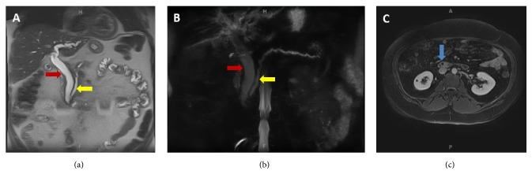
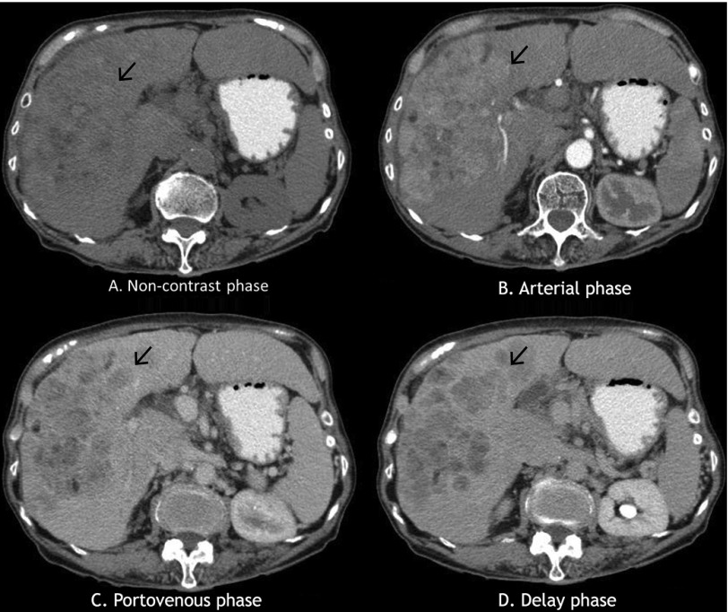
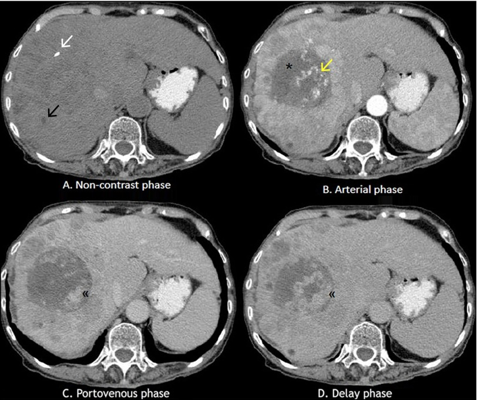
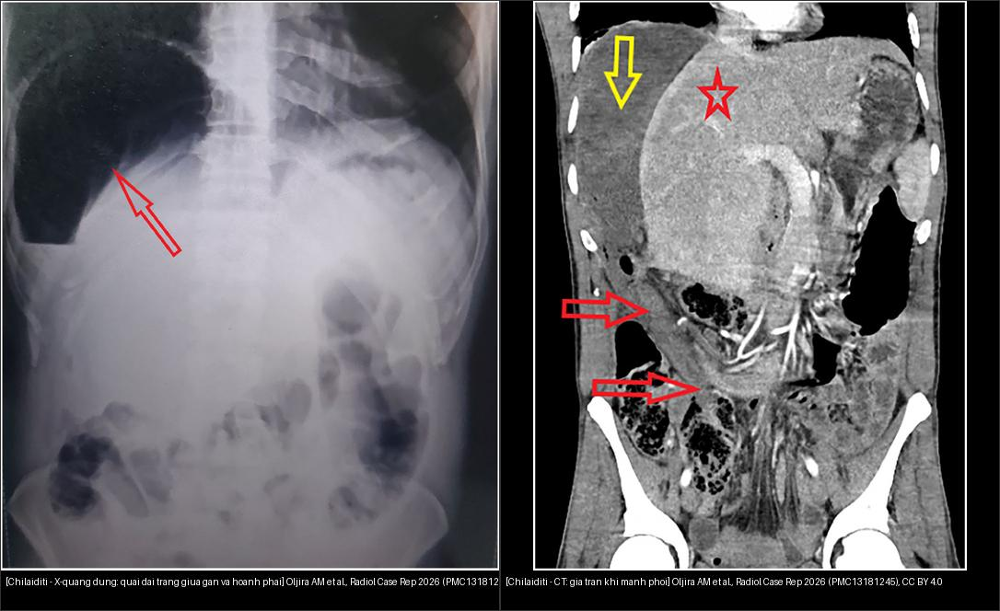

100 — Tổng quan hệ Bụng / Abdomen overview
Tags: tong-quan
Mức chắc chắn (certainty): tổng hợp y văn (literature synthesis).
Bảng so sánh phân biệt bắt buộc (Hệ Bụng)
| Mẫu hình (pattern) | Vị trí (location) | Gamut chính (DDx) | Phân biệt nhanh (Chốt định lượng/động học) | Bài chi tiết |
|---|---|---|---|---|
| Khối ngấm thuốc mạnh thì ĐM (Hypervascular) | Gan (liver) | HCC, FNH, Adenoma, Hemangioma | Thải thuốc (washout) + vỏ = HCC; Sẹo T2 sáng ngấm muộn + giữ thuốc Primovist = FNH; Ngấm nốt ngoại vi hướng tâm = Hemangioma; Nốt MỚI nhỏ, nhiều ổ, sau oxaliplatin = FNH-like (1733); ở trẻ sau hóa trị/HSCT, HBP tăng 11/16 hoặc đồng 5/16, không washout = FNH-like (1793) |
120, 121, 122, 1733, 1793 |
| Nhu mô gan lành "bẩn" sau hóa trị trước cắt gan (chemo-injured non-tumorous liver) | Gan – nhu mô lành quanh ổ di căn | Nhiễm mỡ đơn thuần · CASH (viêm gan nhiễm mỡ) · SOS/gan xanh · giả xơ gan · FNH-like | CT: gan < 40 HU hoặc gan–lách > 10 HU (nhưng 48 HU chỉ Se 57%); PDFF bình thường < 5,6%, có ý nghĩa ≥ 10%; CASH/SOS có thể "CT bình thường" — CASH phân loại bằng FF + D + 25OH-VitD3 (Se 85,3%/Sp 93,1%), SOS nhận diện bằng mosaic thì động mạch; SOS làm truyền máu 46,6% vs 25,3% và PHLF 21,0/33,8/42,4% theo điểm tổn thương gan | 1859, 1910, 1733, 1821, 1856 |
| Lách to + giảm tiểu cầu sau oxaliplatin (splenomegaly with thrombocytopenia) | Lách – hệ cửa – gan | SOS/PSVD do oxaliplatin · di căn lách · ITP · ức chế tủy (CIT) · huyết khối TM lách/cửa · lymphoma | Thể tích lách tăng > 30% (hoặc > 12 cm) + tiểu cầu tương quan nghịch (p < 0,001) + không ổ khu trú = SOS**; **ổ giảm tỷ trọng trong lách = di căn lách** (37 ca y văn, 86,5% muộn); **lách bình thường = ITP/CIT**; **ngưỡng trước cắt gan: tăng thể tích lách > 8,6% (AUC 0,62) | 1792, 1910, 140, 146 |
| Nang gan (một/nhiều) | Gan (nang) | Nang gan đơn thuần, PLD (ADPKD/ADPLD), bệnh Caroli, u mô đệm đường mật (von Meyenburg), di căn nang, nang sán (CE1–CE5), MCN-L | Dịch thuần nhất + 0–15 HU + không ngấm = nang đơn thuần; ≥ 10 nang gan + nang thận = PLD; nốt < 1,5 cm T2 "trời sao" + không thông mật = von Meyenburg; giãn đường mật thông cây mật + central dot = Caroli; màng tách/nang con/vôi hóa vỏ = nang sán; vách ngấm + nữ trung niên + nang lớn = MCN-L | 123, 126, 139, 129 |
| Nang gan NHIỄM TRÙNG trong gan đa nang | Gan (nang) | Nhiễm trùng nang, xuất huyết nang, áp-xe gan, u hoại tử, viêm đường mật | Sốt + CRP > 50 mg/L + ổ FDG trong nang = nhiễm trùng (PET dương 96%; CT chỉ gợi ý 39%); T1 sáng + không ngấm FDG = xuất huyết cũ; DWI sáng/ADC thấp = mủ; kháng sinh ≥ 28 ngày giảm tái phát (OR 0,12); ở người ghép thận: ciprofloxacin 4,2% / trimethoprim 12,2% vào nang vs piperacillin 0,3%, chỉ 9% ca phải giảm IS (116) | 104, 116, 157, 164 |
| Giãn đường mật trong gan ở người ĐÃ có miệng nối mật–ruột (post-hepaticojejunostomy) | Rốn gan – đường mật trong gan | Hẹp miệng nối xơ · sỏi/sỏi bùn trên hẹp · hội chứng quai tới (Sump) · tái phát/ung thư đường mật · giãn tồn tại sau mổ | Thắt khu trú tại miệng nối + giãn trên hẹp + sốt/ALP tăng = hẹp miệng nối (hẹp 20%, viêm đường mật tái diễn 39% trong 100 ca RYHJ); khuyết tín hiệu trong lòng ống giãn = sỏi; quai hỗng tràng giãn > 3 cm, không thắt = quai tới; giãn đều, không thắt, không triệu chứng = giãn tồn tại — không can thiệp (113) |
113, 108, 107, 133, 1940 |
| Khối giảm đậm độ / Ngấm thuốc viền (Hypovascular / Rim) | Gan | Di căn (đại-trực tràng, dạ dày), CCC đường mật, Áp-xe gan | Ngấm viền + thải ngoại vi + co kéo bao gan = CCC (LR-M); Dấu bia bắn đôi (double target) + sốt = Áp-xe | 120, 121 |
| Tăng men gan sau hóa trị ở bệnh nhân ung thư vú (post-chemo transaminitis) | Gan – khoảng cửa – túi mật | Bùng phát HBV · DILI · tiến triển/di căn gan · SOS · gan nhiễm mỡ do hóa trị · pseudocirrhosis | HBV DNA tăng ≥ 2 log10 (hoặc dương lại) + ALT ≥ 3× nền và > 100 U/L = bùng phát HBV; R ≥ 5 = DILI tế bào gan, R ≤ 2 = ứ mật; phù khoảng cửa 0–20 HU + thành túi mật > 3 mm chỉ gợi ý, không chẩn đoán; không chờ men gan giảm mới kháng virus | 1790, 1732, 1910, 1918 |
| Ổ giảm đậm độ trong gan CÓ KHÍ / VÁCH (áp-xe sinh mủ) | Gan (chủ yếu thùy phải) ± TM gan/phổi/mắt | Áp-xe do K. pneumoniae (hvKP) vs áp-xe đường mật/ESBL vs áp-xe sinh khí vs nhiễm trùng nang (104) vs HCC hoại tử vs amíp vs nang sán bội nhiễm | Bờ không đều 96,4% + trong không đồng nhất 89,2% + trung tâm giảm đậm độ MỌI thì = áp-xe (u còn mô sống ngấm thì ĐM + thải thuốc); khí → aOR tử vong 10,16; khuyết ngấm TM gan = thể xâm lấn → soi đáy mắt; dẫn lưu > 5 cm, kháng sinh đơn thuần < 3 cm | 103, 104, 121, 163, 475 |
| Giãn đường mật / Dấu ống đôi (Double-duct) | Mật – Tụy | U đầu tụy (PDAC), U bóng Vater, U Klatskin, Sỏi OMC | Cắt cụt đột ngột ống mật + ống tụy (double-duct) = U đầu tụy; Giãn chỉ trong gan hợp lưu = Klatskin | 130, 131, 136 |
| Hẹp đường mật KHÔNG xác định (lành vs ác) | Mật (rốn/xa/lan tỏa) | Klatskin/CCA, PDAC, PSC, IgG4-SC, cholangiopathy sau mổ/ghép, eosinophilic cholangitis, AIP | Coi là ÁC (~70%) tới khi chứng minh ngược; thành ≥ 3 mm + ngấm mạnh + hạch > 1 cm + hẹp dài/bất đối xứng = ác; hẹp nhẵn liên tục + IgG4 ≥ 135 mg/dL + tổn thương nhiều tạng = IgG4-SC; nhiều đoạn bỏ nhảy + IBD = PSC | 132, 131, 136 |
| Hẹp đường mật SAU MỔ/GHÉP (lành) | Đường mật sau ghép gan | Hẹp miệng nối, cholangiopathy thiếu máu (tắc ĐM gan), tái phát PSC, tái phát u/PTLD, sỏi đường mật, rò/nang mật | 1 ổ tại miệng nối + bờ nhẵn thuôn = miệng nối; nhiều ổ trong gan + tắc/hẹp ĐM gan + hoại tử quanh mật = cholangiopathy thiếu máu; khối/hạch ngấm mạnh = tái phát u/PTLD; ổ dịch ngấm mật trên thì gan–mật = rò mật | 133, 132, 124, 107 |
| Tăng men gan MUỘN sau ghép gan ở trẻ (> 6 tháng) | Mảnh ghép gan – khoảng cửa/tiểu thùy | dn AIH/plasma cell-rich rejection · TCMR muộn · AMR · tái phát AIH · hẹp miệng nối mật · HAT/HAS · CMV/EBV/adenovirus/HEV · DILI · de novo MASLD · PTLD | Hình ảnh KHÔNG đặc hiệu — chỉ để LOẠI TRỪ (MRCP hẹp miệng nối; Doppler HAT/HAS); chốt = sinh thiết: viêm khoảng cửa giàu tương bào + viêm giao diện ± C4d mao mạch khoảng cửa, viêm tĩnh mạch trung tâm 85,7%; anti-GSTT1 dương 100% khi làm; trẻ 5–10% (đoàn hệ PCRR 15,3%), trung vị 20,6 tháng; HEV: PCR máu + PHÂN, không dùng huyết thanh học (3150) | 1945, 1916, 1917, 1913, 1918, 1933, 3150 |
| Hẹp đường mật sau can thiệp NANG SÁN | Đường mật (vùng nang) | Xơ hóa do chất diệt đầu sán, hẹp do rò/mảnh màng, tái phát nang, CCA, PSC | Tiền sử PAIR/mổ nang + hẹp khu trú + không khối = xơ hóa do chất diệt; hẹp lan tỏa chuỗi hạt + IBD = PSC; khối + CA 19-9 tăng = CCA; kiểm tra thông mật–nang trước khi bơm chất diệt | 106, 139, 132, 133 |
| Rò mật sau mổ/ghép (bile leak) | Đường mật – khoang mổ | Rò miệng nối, rò ống túi mật, rò sau cắt gan, tụ dịch không thông, rò do stent | Tụ dịch T2 sáng KHÔNG chứng minh rò; thuốc gadoxetic tràn vào tụ dịch ở 60–180 phút = rò hoạt động (Se 96,4%, Sp 100% khi đủ 3 mốc); không thấy thuốc ở 20–25 phút chưa loại trừ (Se chỉ 42,9%); sau cắt gan: bilirubin dịch ≥ 3× huyết thanh từ ngày 3 = rò (ISGLS), gặp 5–15% (B/C 7,0%), ống phân thùy đứt hoàn toàn → ERCP thất bại | 107, 108, 133, 137, 1814 |
| Rò mật–màng phổi (bilothorax) | Gan – cơ hoành phải – khoang màng phổi | Rò mật–màng phổi sau cắt/ghép gan · sau PVE/PTBD/đốt u · tràn dịch đơn thuần · empyema · chylothorax · hemothorax · bilothorax giả (thoát vị hoành/máu tan) | CT 0–20 HU KHÔNG phân biệt mật với dịch; tỷ lệ bilirubin dịch/huyết thanh > 1 nhưng dương tính giả khi tràn máu/thoát vị hoành; tràn dịch > 4 tuần sau ghép = nghi rò; phải dẫn lưu màng phổi + giải áp đường mật song song (chỉ hút ngực → rò tiếp tục) | 1814, 1820, 040, 108, 137 |
| Gan còn lại không đủ trước cắt gan lớn (insufficient FLR) | Gan – thùy mang u và thùy còn lại | PVE · radiation lobectomy Y-90 · LVD · ALPPS · hai thì · cắt gan nhỏ hơn | sFLR 20% gan lành / 30% sau hóa trị / 40% xơ gan và HBS < 2,7%/min/m² = không đủ; PVE +37,9% trong ~26 ngày rồi chững; RL 26–45% trong 44 ngày–9 tháng, đủ chức năng 75 vs 31 ngày; PVT cùng bên = PVE không làm được, RL vẫn làm được; phì đại thể tích ≠ hồi phục chức năng | 1821, 1856, 1825, 930 |
| Rò dưỡng trấp sau cắt/ghép gan (chylothorax) | Bạch mạch rốn gan/ống ngực – cơ hoành – khoang màng phổi | Dưỡng trấp màng bụng đơn thuần · dưỡng trấp màng phổi · dưỡng trấp hai khoang · bilothorax · rò tụy–màng phổi · hepatic chylothorax (xơ gan) | CT 0–20 HU KHÔNG gọi tên được; triglyceride dịch > 110 mg/dL (1,24 mmol/L) = chốt, 50–110 = vùng xám cần chylomicron, < 50 gần như loại; dịch trong không loại trừ khi nhịn ăn; đo cả triglyceride + bilirubin + amylase trên cùng mẫu; MCT → TPN/octreotide → chụp bạch mạch/nút mạch → mổ | 1839, 1820, 1822, 1823, 1737 |
| Khối dịch quanh thận ghép (perigraft fluid) | Sau phúc mạc hố chậu – quanh thận ghép/bàng quang | Nang bạch huyết · urinoma · máu tụ · áp-xe · seroma · ứ nước bể thận · giả phình miệng nối | Creatinin dịch = huyết thanh → nang bạch huyết; > huyết thanh → urinoma; 0–20 HU = dịch, 50–70 HU = máu tụ cấp; < 5 cm không triệu chứng theo dõi; hút đơn thuần tái phát tới 59%; xơ hóa → nút bạch huyết INL–LE → cửa sổ phúc mạc | 3088, 3011, 1750, 1839 |
| Rò mật–phế quản (bronchobiliary fistula) | Gan – cơ hoành phải – cây phế quản phải | BBF sau cắt/ghép gan, đốt nhiệt/TACE, sán gan, chấn thương, tắc mật · áp-xe phổi · rò phế quản–màng phổi · viêm phổi hít | Ho ra mật vàng–xanh + bilirubin đờm dương = chốt; CT/MRI chỉ thấy đường rò 52,9%, giãn đường mật 94,1%; hình ảnh âm không loại trừ; giải áp mật (PTCD/ERCP) trước, bít phế quản (spigot/plug) khi còn rò; tử vong 47,1% (17 ca) | 1824, 1820, 930, 934 |
| Rò mật–nang dai dẳng sau PAIR (cystobiliary fistula) | Nang sán – đường mật trong gan | Rò lưu lượng thấp · rò lưu lượng cao (≥ 400 mL/ngày) · rò ẩn (occult) · vỡ nang vào đường mật · biloma không thông · hẹp do chất diệt | Bilirubin dịch dẫn lưu cao + lưu lượng 24 giờ = mật; nang ≥ 8,85 cm + bilirubin trực tiếp ≥ 0,7 mg/dL → CBC 42%; ≥ 400 mL/ngày hoặc > 10 ngày → ERCP cắt cơ thắt + stent; S-CAT chỉ bơm chất diệt khi < 10 mL/ngày; CT có thể bỏ sót đường hầm | 1809, 106, 1814 |
| Giãn đường mật TRONG GAN khu trú ± sỏi | Đường mật trong gan | Sỏi trong gan (hepatolithiasis/RPC), bệnh Caroli, clonorchiasis, PSC (chuỗi hạt), IPNB, iCCA, HCC xâm lấn ống (BDTT) | Sỏi tăng đậm độ CT + T2 tối trong ống giãn = sỏi trong gan; giãn nang thông với cây mật + central dot = Caroli; khối NGẤM trong lòng ống + giãn không tương xứng = IPNB; teo thùy + khối ngấm = iCCA; sỏi trong gan lâu năm → nguy cơ iCCA; nang lớn vách ngấm không thông mật = MCN-L; giãn ống nhỏ ngoại vi + khuyết lòng ống dạng sợi KHÔNG ngấm thuốc + vùng ăn cá sống = sán lá gan nhỏ; Caroli/CHF + khối đặc/vách dày mới + CA 19-9 tăng = iCCA (LR-M) | 138, 128, 123, 131, 132, 129, 173 |
| Ống mật "giả giãn" sau can thiệp u gan | Đường mật trong gan sau TACE/TARE/RFA | Hoại tử ống mật (BDN)/cholangiopathy thiếu máu, giãn ống thật do tắc, huyết khối TM cửa, nang quanh ống mật, Caroli, biloma dạng phân nhánh | CT thấy "ống giãn" nhưng siêu âm/MRCP KHÔNG giãn thật = BDN; ống giãn thuôn ngoại vi + thấy nguyên nhân tắc = giãn thật; cavernous transformation + ngấm bàng hệ = huyết khối cửa; nối với ổ dịch + sau TACE = biloma; ALP > 200 U/L ở 76,2% ca tổn thương đường mật; biloma 20–65% có triệu chứng, tử vong 5–10% | 179, 930, 133, 137 |
| Thành túi mật dày sau can thiệp gan | Túi mật – động mạch túi mật | Viêm túi mật thiếu máu sau TACE, viêm túi mật do xạ sau TARE, viêm túi mật do sỏi, phù thành do xơ gan/suy tim, hoại tử/thủng, ung thư túi mật, adenomyomatosis | Vật liệu tắc trong thành trên CBCT sau TACE + thành ≥ 4 mm + thâm nhiễm mỡ = viêm túi mật thiếu máu (10% nhóm có lipiodol trong thành cần can thiệp; catheter trực tiếp ĐM túi mật OR 52); dày thành đều, KHÔNG thâm nhiễm mỡ, có cổ trướng = phù thành do xơ gan; mất ngấm thành/khí/màng trong lòng = hoại tử, dẫn lưu ngay; lipiodol trong thành đơn thuần tự rửa trôi 1–2 tháng | 180, 179, 130, 102 |
| Loét dạ dày–tá tràng MỚI sau TACE/TARE | Dạ dày – tá tràng (theo nhánh ĐM: vị phải, GDA, vị trái/phụ) | Loét do xạ (TARE), loét thiếu máu do hạt/thuốc (TACE/DEB), loét H. pylori/NSAID, loét ác tính do u xâm lấn, viêm tụy do trào ngược, hội chứng sau can thiệp | Loét muộn 1–12 tháng sau TARE + đau dai dẳng dù PPI = loét do xạ (1,9–3,2%; 6% phải mổ); loét 3 ngày–4 tuần sau TACE = thiếu máu (biến chứng ĐM gộp 1,1–7,2%, 62% < 72 giờ); coil GDA/vị phải KHÔNG bảo đảm; chốt bằng vi cầu trong mô bệnh | 1811 |
| Suy gan + cổ trướng MỚI sau TARE | Gan – nhu mô không u (non-tumoral liver) | REILD (Sangro), tiến triển u, tắc mật sau xạ, nhiễm trùng, SOS do hóa chất, suy tim phải/PVT, hội chứng sau thuyên tắc | Bilirubin > 3 mg/dL + cổ trướng trong 4–8 tuần, không u sống/không giãn ống mật = REILD (1,0–5,4%; 60,6% khi TARE cả gan một lần; sống 5,2 vs 22,1 tháng); nốt ngấm mạnh thì ĐM mới = tiến triển; giãn ống mật = tắc mật; sốt/đau 7 ngày đầu tự hết = hội chứng sau thuyên tắc | 1801, 179, 124, 121, 127 |
| Khuyết lòng DÀI trong ống mật | Đường mật (lòng ống) | Giun đũa đường mật, sỏi OMC, cục máu đông (hemobilia), khí đường mật sau cắt cơ Oddi, IPNB/u nhú, stent nhựa | Khuyết lòng dài–trơn–không bóng lưng–CỬ ĐỘNG (hoặc đổi vị trí giữa 2 lần MRCP) = giun; bóng lưng + bờ rõ = sỏi; bám thành, không di động, ống giãn không tương xứng = IPNB; rất sáng trên CT, không thấy trên MRCP = khí; tiền sử can thiệp + thay đổi nhanh vài ngày = máu đông | 174, 138, 129, 131 |
| Tăng áp lực cửa nhưng chức năng gan còn tốt | Gan & hệ cửa | Xơ hóa gan bẩm sinh (CHF), hội chứng Caroli, PSVD, sán máng, huyết khối tĩnh mạch cửa, tắc tĩnh mạch lách, xơ gan sớm | Varices + lách to + tiểu cầu thấp nhưng bilirubin/albumin/INR còn tốt = tăng áp cửa trước xoang; HVPG thường bình thường (chỉ ~30% > 10 mmHg); Caroli: túi giãn thông mật + central dot; CHF: xơ khoảng cửa + ống mật bất thường, kiến trúc tiểu thùy còn nguyên; CSLD khi varices cần can thiệp + tiểu cầu < 150, có cholangitis hoặc LSM > 15 kPa | 149, 166, 127, 124, 176 |
| Nốt gan + amoniac cao + MỘT mạch lớn cửa→chủ ở gan KHÔNG xơ | Gan – tĩnh mạch cửa & hệ thống (shunt ngoài gan) | CEPS type I/II (Abernethy), huyết khối cửa mạn + cavernoma, dò động–cửa, xơ gan có shunt lạc chỗ, TIPS cũ | Thân shunt lớn + nhánh cửa trong gan giảm sản còn thấy khi chẹn bóng = type II (bít được); không nhánh cửa kể cả khi chẹn = type I (hướng ghép gan); áp lực sau chẹn ≥ 24–32 mmHg → bít nhiều thì; nốt gan tới 65%, PAH tử vong 50% | 1907, 149, 187, 124 |
| Ngấm thuốc KHÔNG ĐỒNG NHẤT sau ghép gan + tĩnh mạch gan giãn/đậm hơn IVC | Gan – miệng nối TM gan–IVC | HVOO (hẹp miệng nối, hẹp IVC), huyết khối TM gan/tĩnh mạch cầu nối, SOS/VOD, mảnh ghép quá to/xoắn, hẹp tĩnh mạch cửa, tái phát Budd–Chiari | Chênh áp HV–IVC ≥ 5 mmHg = HVOO (bình thường 1–3 mmHg); tỉ lệ vận tốc chỗ hẹp/trước hẹp > 4:1 (ca 202 vs 18 cm/s) + mất sóng ba pha (phổ một pha chỉ chính xác 66,2%; ba pha liên tục loại trừ); HV đậm hơn IVC + periportal collar = ứ huyết; SOS: toàn gan, mạch ra thông, không chênh áp khu trú; miệng nối ≤ 30 mm → OR 14,286; hẹp cửa: tỉ lệ vận tốc ≥ 3:1 + gradient > 5 mmHg; SOS: HBP lưới, MRE ≥ 2,82 kPa | 1906, 1909, 1910, 1901, 127, 133 |
| Tĩnh mạch cửa đậm sớm ở thì ĐỘNG MẠCH + tăng áp cửa mới sau can thiệp/ghép | Gan – động mạch gan ↔ tĩnh mạch cửa | Rò động–cửa (APF type 1/2/3), THAD, shunt trong HCC, giả phình ĐM gan, huyết khối cửa, HHT | Cửa ≈ ĐMC thì động mạch = APF; THAD hình nêm, mất thì cửa, không đảo dòng = không phải rò; RI < 0,5 + đảo dòng cửa** trên Doppler; can thiệp khi **shunt > 1 cm hoặc có triệu chứng; nút mạch 64,9%, mổ 13,4%, bảo tồn 19,6% (97 ca) | 1841, 1913, 1827, 1912 |
| Mất dòng ĐỘNG MẠCH gan sau ghép → men gan tăng ngày 1–7, có thể nhồi máu | Gan – động mạch gan (miệng nối + nhánh trong gan) | HAT (4–12%), HAS miệng nối (2–13%; trẻ 1,2%), cướp máu lách, giả phình, rò động–cửa, co thắt do thuốc | RI < 0,5 + SAT > 0,08 giây + PSV > 200 cm/s = hẹp; PSV ≤ 48 cm/s (Se 69%/Sp 99%); phổ "water-hammer" = tắc; RI > 0,8 trong 3 ngày đầu ở ~50% là bình thường, về ngày 4; đảo dòng tâm trương + RI > 0,8 = cướp máu lách; hẹp dài + mở lại sau papaverine = co thắt; nhồi máu gắn tắc mạch 85%; ở trẻ PSV ngày 0 24–142 cm/s → năm 1 24–91 | 1913, 1947, 1915, 1914, 1906, 133 |
| Men gan tăng sau ghép gan mà mạch–mật ĐÃ loại trừ | Gan – nhu mô & khoảng cửa | ACR/TCMR (15–25%), EAD, CMV, viêm gan do thuốc, tái phát bệnh nền, thải ghép thể dịch | Sinh thiết + Banff RAI (1–2/3–5/6–7/8–9); ADC < 1,133 × 10⁻³ mm²/s và LSM 12,2 kPa chỉ gợi ý, không chẩn đoán | 1916, 1914, 1913, 1918 |
| Men gan tăng + giảm tiểu cầu + DSA dương, mạch–mật đã loại trừ | Gan – vi tuần hoàn khoảng cửa & xoang | AMR cấp (ABO tương thích < 5%), AMR + TCMR hỗn hợp, AMR mạn, AMR giả dạng SOS, DSA đơn độc, dn AIH/plasma cell rejection | Banff 2016: C4d lan tỏa score 3 (> 50% khoảng cửa) + h-score ≥ 1 + DSA + loại trừ = AMR chắc chắn; C4d+h = 3–4 = nghi ngờ; cAMR cần C4d ≥ 10% + DSA trong 3 tháng; ảnh chỉ loại trừ (Dodd: PSV > 200, RI < 0,5, SAT > 0,08 giây; MRCP LBSC ≥ 3, Se > 90%) | 1917, 1916, 1913, 133 |
| Gan ứ huyết ngoại vi + hạch đuôi sáng ("flip-flop") | Gan – tĩnh mạch gan & TM chủ dưới | Budd–Chiari (nguyên phát/thứ phát), xơ gan, gan tim, SOS/VOD, huyết khối TM cửa | Ngoại vi giảm ngấm + trung tâm/hạch đuôi tăng ngấm + KHÔNG thấy TM gan = BCS (hạch đuôi to ~50%; TM hạch đuôi > 3 mm; US dấu trực tiếp + hạch đuôi to Sp 100%); IVC + TM gan giãn + reflux = gan tim; TM gan thông + nốt/bờ gồ ghề = xơ gan; không huyết khối lớn + bối cảnh hóa trị = SOS | 1901, 127, 149 |
| T1 sáng đối xứng hạch nền (globus pallidus) | Não – hạch nền (neurohepatology) | Bệnh não gan/HE thể ẩn, bệnh não–não mắc phải (AHD), TPN dài hạn, gadolinium tích lũy, ngộ độc mangan; dementia (SI thường GIẢM) | T1 sáng + T2 KHÔNG sáng + bối cảnh xơ gan/shunt = mangan (SI ≥ 0,994; Se 80%/Sp 90,9%; 12,5% xơ gan không HE vẫn vượt ngưỡng); MRI cấu trúc bình thường KHÔNG loại trừ CHE — chốt bằng PHES < −4 / S-ANT1 < 20; thể tích gan LV/BSA < 620 mL/m² → CHE cao 2,9 lần | 1902, 188, 183 |
| Giãn tĩnh mạch ĐÁY VỊ (GV): chọn BRTO hay TIPS? | Dạ dày – đáy vị & shunt cửa–chủ | GOV1/GOV2/IGV1/IGV2; GRS (80–85%), LIPV (10–15%), PCV (~5%) | Có shunt dạ dày–thận lớn + BRTV đầy túi giãn (Hirota 1–2) = BRTO (thành công 97,3%, tắc hoàn toàn ngày 90 93%); không có nhánh thoát (Kiyosue D) hoặc cần hạ áp toàn hệ = TIPS; tăng áp cửa TRÁI do tắc TM lách + gan bình thường = nút keo xuyên lách/cắt lách; đang chảy ồ ạt = cầm máu tạm trước (bịt đường thoát làm tăng áp trong túi giãn) | 181, 176, 146, 149 |
| Bệnh nhân XẤU ĐI trong 30 ngày sau TIPS | Gan – đường mật – màng bụng – tim | Hemoperitoneum (thủng bao gan), hemobilia, suy gan tiến triển nhanh, suy đa cơ quan/suy tim cung lượng cao, endotipsitis, stent sai vị trí | 24 giờ đầu tụt HA + dịch ổ bụng 35–70 HU = máu (không phải báng < 20 HU); nôn máu + vàng da + khối tăng đậm độ trong OMC = hemobilia; sốt + cấy máu dương + FDG trong stent = endotipsitis; bilirubin ≥ 3 lần/INR ≥ 2 lần trong 30 ngày = suy gan tiến triển nhanh; biến chứng nặng 3,2%, tử vong 0,84% (948 ca) | 182, 176, 127, 105 |
| Sau khi đặt stent/dẫn lưu đường mật — theo dõi | Đường mật & stent (biliary tree & stents) | Tắc stent (cặn bùn), u mọc xuyên/phủ qua đầu, di trú stent (gần/xa), thủng tá tràng sau phúc mạc, viêm đường mật tái phát (MDRO) | Khuyết KHÔNG ngấm trong lòng stent = cặn bùn; khối ngấm lấp lòng = u mọc xuyên/phủ; đầu stent tụt + thấy stent ở tá tràng/dạ dày/gan = di trú; khí ngoài lòng quanh D2–D3 = thủng sau phúc mạc; kháng sinh < 7 ngày → tái phát 50% vs 33% | 137, 131, 133 |
| Vàng da tắc mật: có chỉ định dẫn lưu TRƯỚC mổ không? | Đường mật – đầu tụy (biliary – pancreatic head) | Tắc xa do u (PBD qua ERCP), tắc rốn gan (PTBD/EUS-BD, chỉ dẫn lưu FLR), sỏi OMC (ERCP lấy sỏi), viêm đường mật cấp | TB ≥ 15 mg/dL (≥ 14,6 mg/dL = yếu tố tiên lượng tử vong 90 ngày) + cholangitis/albumin < 3 g/dL/mổ hoãn/tân bổ trợ → DẪN LƯU, đích TB < 8,9 mg/dL; vàng da 10–15 mg/dL không biến chứng → mổ thẳng (PBD tăng SSI 70,8% vs 18,7%, cấy mật dương 75% vs 25%, biến chứng nặng RR 1,65) | 925, 102, 137, 910, 131 |
| Viêm đường mật cấp ở THAI PHỤ | Đường mật trong + ngoài gan (intra/extrahepatic biliary tree) + thai | Sỏi ống mật chủ · sỏi kẹt bóng Vater · Mirizzi · hẹp sau cắt túi mật · ký sinh trùng · u đường mật/tụy · ICP · HELLP · AFLP · viêm gan · viêm túi mật · viêm tụy | TG18: xác định = A (sốt/BC–CRP tăng) + B (bilirubin ≥ 2 mg/dL hoặc men ứ mật) + C (giãn đường mật/nguyên nhân); độ III = suy tạng (dopamine ≥ 5 µg/kg/phút, PaO₂/FiO₂ < 300, creatinin > 2,0, PT-INR > 1,5, tiểu cầu < 100.000) → dẫn lưu trong 6 giờ; ERCP < 24 giờ giảm 20% tử vong; tử vong 1,9% (84.063 ca), tới 20% khi kháng đa thuốc; thai: ERCP 1.307 ca — biến cố thai 5,2–6,2%, fluoroscopy 15 giây/< 0,5 mGy; kháng sinh 2–3 ngày sau dẫn lưu (OR 0,78) | 1929, 1925, 138, 108 |
| Quai tịt đầu giãn + thâm nhiễm mỡ hố chậu phải | Hố chậu phải – ruột thừa | Viêm ruột thừa cấp (đơn thuần/phức tạp) vs viêm túi thừa ruột thừa vs viêm mào mỡ vs sỏi niệu quản vs PID/TOA vs mucocele | > 6 mm + thâm nhiễm mỡ + ngấm thành = viêm cấp; khí ngoài lòng/áp-xe/appendicolith ngoài lòng/mất ngấm thành = phức tạp; giãn > 15 mm + vôi hóa + KHÔNG thâm nhiễm = mucocele; nốt mỡ viền mảnh, không có quai giãn = viêm mào mỡ; khí trong lòng gặp 31% ca viêm — không loại trừ; thiếu dấu phụ → xác suất ~2% | 161, 134, 160, 165 |
| Áp-xe ruột thừa ở thai phụ | Hố chậu phải – ruột thừa (đã di chuyển theo tuổi thai) | Áp-xe ruột thừa · đám quánh · thai ngoài tử cung · xoắn phần phụ · u bì biến chứng · ứ nước thận phải | Ổ > 40 mm + WBC không giảm sau 24 giờ = nguy cơ chuyển mổ; bảo tồn thất bại ~30%, đã đặt dẫn lưu vẫn mổ 25,4%; MRI Se 92%/Sp 98%; ERAT khi dẫn lưu qua da thất bại | 109 |
| Giãn quai ruột / Thâm nhiễm mỡ khu trú | Ống tiêu hóa (GI) | Viêm ruột thừa, Viêm túi thừa, Tắc ruột non (SBO), Tắc quai kín | Ruột thừa > 6 mm; Ruột non > 3 cm; Xoắn mạch (whirl) + chữ C + mất ngấm thành = Tắc quai kín thiếu máu (mổ tối khẩn) | 160, 162 |
| Giãn ruột non + tiêu chảy mỡ/đầy hơi sau cắt ruột (SBS – SIBO) | Ruột non còn lại – hỗng tràng/hồi tràng | SIBO · giãn thích nghi · hẹp miệng nối/dính · CIPO · bệnh celiac · tiêu chảy muối mật · IMO | Không có dấu hiệu hình ảnh đặc hiệu của SIBO; giãn lan tỏa không điểm chuyển tiếp = thích nghi/CIPO, có điểm chuyển tiếp = hẹp/tắc; H₂ ≥ 20 ppm/90 phút hoặc CH₄ ≥ 10 ppm; cấy ≥ 10³ CFU/mL; SIBO 40–80% ở trẻ SBS, 76% đợt bùng phát | 1960, 3053, 3006, 162 |
| Tiêu chảy nước mạn sau cắt hồi tràng (BAD) | Hồi tràng tận – đại tràng | BAD · SIBO · tái phát Crohn · hẹp miệng nối · celiac · viêm đại tràng vi thể | Không có dấu hiệu hình ảnh của BAD; SeHCAT < 15% (trung bình–nặng < 10%, rất nặng < 5%); 97% Crohn cắt hồi tràng có SeHCAT bất thường (trung vị cắt 24 cm); CT/MRE chỉ để đo chiều dài ruột + loại trừ hẹp/rò/tái phát | 1982, 1960, 1762, 162 |
| Tắc ruột non ở người ĐÃ XẠ tiểu khung | Ruột non – tiểu khung (trong trường chiếu) | Hẹp do xạ · dính sau mổ · tái phát u/phúc mạc · sỏi ruột tại chỗ hẹp · rò/áp-xe do xạ | Thành dày 6–12 mm ĐỐI XỨNG + đoạn ≥ 5 cm + ngấm kém = hẹp do xạ (khác dính: chuyển tiếp đột ngột, thành mỏng); tắc do xạ vs dính: bảo tồn thành công 33,9% vs 58,4%, phải cắt ruột 44,0% vs 5,6%, tái nhập 28,8% vs 13,2%; Gastrografin AUC 0,860 | 111, 162, 1667 |
| Chảy máu trực tràng MUỘN sau xạ | Trực tràng (trong trường chiếu) | Viêm trực tràng xạ mạn (telangiectasia) · tái phát u · loét/rò do xạ · ung thư thứ phát · trĩ/angiodysplasia | Niêm mạc nhợt + mạch giãn ngoằn ngoèo + không khối = viêm xạ (xác nhận 25,7% sau xạ ung thư cổ tử cung); KHÔNG sinh thiết mù mô đã xạ; APC 80–90%, formalin 81%, RFA 83,3%; nổ đại tràng khi APC: 12 ca, 50% thủng — do chuẩn bị kém | 112, 1665, 162 |
| Nang & Ổ dịch quanh tụy | Tụy (pancreas) | Tụ dịch cấp quanh tụy (APFC), tụ dịch hoại tử cấp (ANC), nang giả tụy, hoại tử có vỏ (WON), u nhầy nhú nội ống tụy (IPMN), u nang thanh dịch (SCN), u nang nhầy (MCN) | < 4 tuần vs ≥ 4 tuần + có hoại tử hay không (Atlanta 2012); Thông ống tụy chính = IPMN | 135, 136 |
| Đau thượng vị dữ dội + TG rất cao + tụy hoại tử | Tụy thân/đuôi – khoang quanh tụy – túi mạc nối | HTG-AP · viêm tụy mật · rượu · tăng canxi · thuốc (asparaginase, corticoid, estrogen) · IPMN/u nang | TG ≥ 11,3 mmol/L (1.000 mg/dL) hoặc 5,65–11,3 + huyết thanh đục = HTG-AP; TG ≥ 200 mg/dL: hoại tử OR 3,27; hoại tử 29,5% → 52,3% → 85,7% theo TG; CT 72–96 giờ mới đánh giá được hoại tử; khí trong ổ = nhiễm khuẩn; tái phát 64,8%/1 năm → kiểm soát TG sau ra viện | 1680, 135, 628, 684, 136 |
| Ổ hoại tử tụy CÓ KHÍ / sốt + suy tạng sau 2–4 tuần | Tụy – khoang quanh tụy – sau phúc mạc | Hoại tử nhiễm khuẩn sinh hơi · rò tiêu hóa vào ổ · khí sau can thiệp (catheter/stent) · viêm tụy khí thũng vô khuẩn (khí < 7 ngày, tử vong 44,1%) · thủng tạng rỗng | Khí đặc hiệu cao nhưng ĐỘ NHẠY THẤP → không có khí KHÔNG loại trừ nhiễm khuẩn; khí ngay sau dẫn lưu/stent = do can thiệp, không nâng bậc; hoãn can thiệp tới khi bao vỏ (≥ 4 tuần), 1/3–40% khỏi chỉ bằng kháng sinh; sau 72 giờ dẫn lưu không cải thiện → bóc hoại tử tối thiểu xâm lấn; không kháng sinh dự phòng; luôn đọc thì động mạch tìm giả phình (vỡ tử vong > 50%) | 1683, 1680, 135, 146 |
| Ổ dịch tụy DAI DẲNG/TÁI PHÁT dù đã dẫn lưu | Tụy thân – đuôi thượng nguồn – khoang quanh tụy | Hội chứng ống tụy đứt (DPDS) · WON chưa lành · nang giả · rò tụy nội bộ · u nang (IPMN/SPN) | Đuôi tụy còn ngấm thuốc trong/ven ổ dịch + đoạn ống mất tín hiệu ≥ 2 cm + ống thượng nguồn giãn = DPDS; MRCP 3D (Se 83,3%) tốt hơn CT khi ống không giãn; rút stent sớm → tái phát 7–42%; DPS 1 năm: 23,3% vs 70,8%; transpapillary chỉ 20% | 1730, 1683, 135, 136 |
| Viêm phổi TÁI PHÁT cùng một thùy + nang giả tụy dưới hoành | Tụy → lỗ hoành/trung thất → phế quản đáy | Rò tụy–phế quản (PBF) · rò tụy–màng phổi · viêm phổi hít/giãn phế quản · lao · áp-xe phổi | Nang giả tụy CHỨA KHÍ + đường rò xuyên hoành + tree-in-bud đáy cùng bên + amylase đờm rất cao (ca: 57.500 U/L) = PBF; PPF 0,4% viêm tụy, 4,5% nang giả; chẩn đoán muộn 12–49 ngày | 1934, 1737, 1730, 031 |
| Gan ứ trệ mạch máu (vào–xoang–ra) | Gan & mạch cửa | Gan tim (cardiac hepatopathy), Budd-Chiari (tắc dòng RA), SOS/VOD (tắc XOANG), huyết khối tĩnh mạch cửa/PVTT/khi TM cửa (tắc dòng VÀO) | Thùy đuôi to giữ ngấm + không thấy TM gan = Budd-Chiari; TM gan giãn + còn dòng + CVP cao = gan tim; sau ghép < 21 ngày + tăng cân > 5% + không giãn đường mật = SOS; ngấm mạch + phì đại mạch + mật độ iod ≥ 0,9–1,14 mg/mL = PVTT | 127, 124, 121 |
| Khó thở + giảm oxy ở bệnh nhân xơ gan (HPS vs PoPH) | Gan – tuần hoàn phổi (liver – pulmonary circulation) | HPS (giãn mạch, shunt phải–trái), PoPH (co mạch/tái cấu trúc), tràn dịch màng phổi do gan, thuyên tắc phổi, shunt trong tim (PFO/ASD), Abernethy | PaO₂ < 80 + A–a ≥ 15 mmHg (≥ 20 nếu > 64 tuổi) + bọt ở tim trái sau ≥ 3 chu chuyển (hoặc MAA não > 6%) = HPS; bọt < 3 chu chuyển = shunt trong tim**; **mPAP > 20 + PVR ≥ 2 WU + PAWP ≤ 15 trên thông tim = PoPH (RVSP > 50 trên siêu âm: 1/3 có PVR bình thường); mPAP ≥ 45 = chống chỉ định ghép | 81–85 mm) + đang lọc máu = ACKD; nốt đặc ngấm trong nền nang = ACD-RCC (nguy cơ RCC ×100); thận khổng lồ + nang gan = ADPKD | 186, 196, 070, 127, 149 |
| Vạt nội mạc / liềm tăng tỷ trọng thành ĐMC bụng | ĐMC bụng (abdominal aorta) | Bóc tách ĐMC bụng đơn độc (IAAD), IMH, PAU, huyết khối thành trong phình, viêm ĐMC, vỡ phình | Vạt nội mạc + hai lòng = bóc tách; liềm tăng tỷ trọng 5–15 mm trên không cản quang + không ngấm = IMH; ổ loét đối quang sâu > 20 mm = PAU nguy cơ cao; di lệch vôi hóa nội mạc 78% ca IAAD; can thiệp khi ≥ 50–55 mm, malperfusion hoặc vỡ | 171, 1807, 170, 070 |
| Theo dõi sau can thiệp bóc tách ĐMC bụng | ĐMC bụng (abdominal aorta) | Endoleak I–V, Hẹp/tắc nhánh tạng, Lòng giả còn thông/giãn, Di trú/gãy stent, Nhiễm trùng graft/rò chủ–ruột | Túi tăng ≥ 5 mm = tăng có ý nghĩa; type I/III → can thiệp; type II → chỉ can thiệp khi túi tăng; FEVAR: mất nhánh 9,9% ở 5 năm, can thiệp lại 37,2%; type II dai dẳng: vỡ/tử vong do phình ~2% ở 10 năm; CTA 3 pha (muộn 70–120 giây) + 30 ngày rồi 12 tháng/lần | 172, 171, 840 |
| Sốt + huyết khối trong hệ cửa–mạc treo | Gan & mạch cửa/mạc treo | Pylephlebitis (huyết khối mủ), huyết khối lành, huyết khối u, MVT, khí tĩnh mạch cửa, áp-xe gan | Sốt + đau bụng + khuyết thuốc cửa + ổ nhiễm (ruột thừa/túi thừa/viêm tụy) = pylephlebitis; khuyết thuốc SMV + phù mạc treo "lược" = MVT; không sốt, không ngấm thành mạch = huyết khối lành; khí ra ngoại vi tới dưới bao gan = khí TM cửa, không phải huyết khối | 163, 124, 135 |
| Khuyết thuốc trong tĩnh mạch lách ± nhồi máu lách | Lách – tĩnh mạch lách – tụy | Huyết khối lành sau viêm tụy, huyết khối u (PDAC thân/đuôi), huyết khối mủ, mõm cụt sau mổ, tăng đông (MPN), nhồi máu lách, rách lách, áp-xe lách | Viêm tụy + khuyết thuốc + tụy bệnh lý = huyết khối lành (tái thông 46% khi chống đông vs 15%); mạch giãn + mô ngấm trong lòng = huyết khối u; nêm giảm đậm độ đáy ở vỏ = nhồi máu (CT 100% vs siêu âm 29,9%); khí trong ổ + thành ngấm = áp-xe | 146, 135, 163, 140 |
| Hố lách trống + khối di động + dấu xoáy | Lách – cuống lách (spleen – splenic pedicle) | Lách lạc chỗ/xoắn cuống, nhồi máu lách do thuyên tắc, splenosis/đa lách, tự cắt lách (hồng cầu liềm), khối phần phụ, xoắn dạ dày | Hố lách trống + khối giống lách + dấu xoáy cuống = lách lạc chỗ xoắn; lách 49 HU (24–64) so với gan 92 HU thì TM cửa = nhồi máu; động mạch còn ngấm nhưng tĩnh mạch không đọng thuốc = tắc TM trước ĐM; < 0,2% ca cắt lách**; còn ngấm → splenopexy, mất ngấm → cắt lách | 119, 146, 140, 160 |
| **Sốt > 3 tuần không rõ ổ (FUO) + tổn thương trong bụng | Đa khoang (gan–mật, hồi manh tràng, sau phúc mạc, tiểu khung) | Áp-xe gan, lao phúc mạc/hồi manh tràng, Crohn, áp-xe cơ thắt lưng chậu, nhiễm endograft ĐMC, lymphoma, di căn giả áp-xe | Siêu âm 86% → CT bụng 92% → PET/CT (dương thật 47,9%); nhiều ổ nhỏ 2–5 mm + giảm bạch cầu = nấm; "áp-xe" không đáp ứng kháng sinh + khối tụy = di căn; PET âm không loại trừ (âm giả 19%) | 147, 163, 161, 141 |
| Đái máu đại thể khó cầm sau xạ trị khung chậu (bàng quang co nhỏ, thành dày đều) | Bàng quang – mạch chậu trong (bladder, internal iliac) | Viêm bàng quang xạ · u niệu mạc thứ phát · máu cục · viêm bàng quang do cyclophosphamide · rò động mạch chậu – niệu quản | Thành dày đều + giãn mạch trên nội soi + không khối = viêm xạ; máu cục 50–70 HU không ngấm, đổi hình theo tư thế; khối ngấm thuốc/hạn chế khuếch tán = u (bài 1608); nút mạch bàng quang: kỹ thuật 100%, lâm sàng 85–90%, Hb 7,8 → 12,2 g/dL, tái phát 18,7%; alum 1% 66–100% · formalin 89% nhưng 31% biến chứng nặng · HBOT 60–92% | 1633, 582, 1608, 910 |
| Stent niệu quản "vẫn nằm đúng chỗ" nhưng đau/tắc | Niệu quản – bể thận – bàng quang (K/U/B segments) | Kết vôi stent (FECal 1–5) · sỏi niệu quản mới · cản quang tồn dư · vôi hóa mạch chậu · stent gãy/di trú · sỏi bàng quang | Vôi hóa bám theo ống stent, dày ở coil, đủ 3 đoạn K/U/B; NCCT lát mỏng là chuẩn (76,1%), KUB không lập bản đồ được; KUB score ≥ 9 = nguy cơ nhiều thì; không kéo mù → dừng, chụp lại | 1620, 1660, 152 |
| Stent niệu quản + sốt: khuẩn niệu hay nhiễm stent? | Niệu quản – bể thận – quanh thận/cơ chậu (stent, collecting system, retroperitoneum) | Nhiễm stent/biofilm · khuẩn niệu không triệu chứng · sỏi tắc trên stent · áp-xe cơ chậu do stent di trú · nhiễm nấm · viêm thận–bể thận sinh hơi · thải ghép | "Stent đúng vị trí" ≠ "stent thông": ứ nước + sốt = can thiệp; biofilm 42% trên stent vs 3,2% nước tiểu → cấy nước tiểu âm không loại trừ; FUSAUTI trẻ 9,01% (nữ OR 2,15, tiền sử UTI OR 7,31, mỗi ngày +1,05); PCN ≈ stent khi tắc nhiễm; rút stent ≤ 3 tuần ở thận ghép (UTI OR 0,53); cấy theo cấy không hơn kinh nghiệm (4% vs 7%); đổi/rút stent mới cắt biofilm | 1721, 1660, 1620, 152 |
| Sỏi đường niệu trên ở bàng quang thần kinh / sỏi thận ghép | Thận – niệu quản – bể chuyển lưu (kidney, ureter, diversion) | Sỏi nhiễm trùng (struvite/sanh hoa) · sỏi calci · sỏi acid uric · đóng vôi stent · canxi hóa mạch chậu · sỏi bàng quang | Sỏi san hô đúc khuôn + nước tiểu kiềm = struvite; thận ghép KHÔNG đau → tăng creatinin/tiểu máu là tín hiệu; sỏi ghép 1,4% (128/8.835), 6,2 năm, 5,7 mm; theo dõi < 5 mm, PCNL > 2 cm; URS ở bàng quang thần kinh: nhiễm trùng sau mổ 33,3% vs 4,0%; đóng vôi stent: vỏ cản quang toàn chu vi = phải lấy sỏi + thay stent | 190, 189, 152, 691 |
| Nang thận phức tạp | Thận (kidney) | Bosniak I, II, IIF, III, IV | Ngấm thuốc thật = tăng ≥ 20 HU; Vách dày ≥ 4 mm = Bosniak III; Nốt đặc ngấm thuốc = Bosniak IV | 150 |
| Nang thận phức tạp trong ADPKD | Thận (kidney) | Nang xuất huyết, nang nhiễm trùng, RCC, sỏi, Wunderlich/Page kidney | T1 sáng 30–100 HU không ngấm + không tăng thể tích = xuất huyết cũ; sốt + CRP > 15 mg/dL + thành dày/viêm mỡ = nhiễm trùng (PET/CT Se 84,6%); máu tụ quanh thận + Hb giảm = Wunderlich → CTA/TAE | 164, 157, 150 |
| U thận đặc | Thận | ccRCC, pRCC, chRCC, oncocytoma, AML | Mỡ đại thể −10 đến −100 HU = AML; T2W sáng + mỡ vi thể + ngấm mạnh rồi thải = ccRCC (ccLS ≥ 4); T2W tối đồng nhất + ngấm kém = pRCC; sẹo trung tâm KHÔNG đặc hiệu | 151 |
| Nang thận trên thận teo (bệnh nhân lọc máu) | Thận | ACKD, ACD-RCC, nang phức tạp (Bosniak) | ≥3 nang/thận + thận nhỏ (153 |
| Thận đa nang hai bên (to) | Thận & Gan | ADPKD, ARPKD/CHF, TSC, VHL, HNF1B, nephronophthisis, ACKD, nang đơn thuần nhiều ổ | ≥ 3 nang (15–39t)/≥ 2 nang mỗi thận (40–59t)/≥ 4 (≥ 60t) + tiền sử gia đình = ADPKD; thận to tăng âm vi nang ở trẻ + xơ gan (CHF) = ARPKD; báo htTKV + phân độ Mayo 1A–1E (1C–1E = tiến triển nhanh → cân nhắc tolvaptan) | 157, 123, 156 |
| Sau cắt thận/điều trị RCC — theo dõi tái phát | Thận & di căn (phổi/xương/não/gan) | Tái phát tại chỗ (giường thận), di căn phổi, di căn xương tiêu xương, di căn não, di căn tạng/phúc mạc | Nốt ngấm mới/tăng kích thước so phim cũ ở giường thận = tái phát; di căn xương T1 thấp + tiêu xương + ngấm; RECIST 1.1: PD = +20% VÀ +5 mm; ~30% tái phát sau điều trị triệt căn | 154, 151 |
| U thận HAI BÊN/đa ổ ở người trẻ | Thận | Hội chứng di truyền: VHL, BHD, HLRCC, TSC, SDH | Mỡ đại thể (−10 đến −100 HU) = AML (TSC); nang phổi đáy + tràn khí tự phát = BHD; u cơ trơn da/tử cung + RCC nhú typ 2 = HLRCC; u mạch máu TKTW + pheo + nang tụy = VHL; RCC + PGL/pheo/GIST = SDH | 156 |
| Khối tuyến thượng thận tình cờ | Thượng thận (adrenal) | Adenoma giàu/nghèo mỡ, u tủy thượng thận (pheochromocytoma), di căn, ung thư vỏ thượng thận (ACC) | Không tiêm ≤ 10 HU = Adenoma giàu mỡ; > 10 HU nhưng thải thuốc APW ≥ 60% / RPW ≥ 40% ở 15 phút = Adenoma nghèo mỡ | 155 |
| Khối ngấm mạnh thượng thận/cạnh ĐMC (u tủy thượng thận & u cận hạch) | Thượng thận & hạch cận giao cảm (đầu-cổ, bàng quang, cạnh ĐMC) | Pheochromocytoma, PGL giao cảm (Zuckerkandl), PGL bàng quang, PGL thân cảnh, di căn, adenoma nghèo mỡ | Ngấm mạnh thì ĐM + T2 "bóng đèn" + không tụt tín hiệu fat-sat = pheo/PGL (thải thuốc "chuẩn adenoma" KHÔNG loại trừ); cơn THA khi đi tiểu + khối dưới niêm mạc bàng quang = PGL bàng quang; tách chạc ba cảnh = PGL thân cảnh; metanephrine + alpha-block trước mọi can thiệp | 168, 155, 156 |
| Biến chứng tim mạch của pheochromocytoma (bệnh cơ tim do catecholamine/takotsubo) | Tim & thượng thận | Takotsubo (đỉnh/đảo ngược), viêm cơ tim, ACS, thuyên tắc phổi, bóc tách ĐMC, sốc nhiễm khuẩn | Mạch vành sạch + rối loạn vận động vùng + metanephrine tăng = takotsubo do pheo; biến chứng tới 68%, sốc tim 37,7%, tử vong PMC 13,8%; chẹn alpha trước, beta sau | 167, 168, 177 |
| Điều trị & theo dõi PPGL | Thượng thận & cận hạch | Mổ triệt căn, bảo tồn vỏ, alpha-block ± metyrosine, PRRT, ¹³¹I-MIBG, CVD, temozolomide, TKI, belzutifan | Alpha-block 7–14 ngày, đích ngồi < 130/80; mổ nội soi ≤ 6 cm; tái phát 14,7–47,5%; theo dõi ≥ 10 năm** | 177, 168, 169 |
| Biến chứng THẦN KINH của pheochromocytoma (PRES, RCVS, đột quỵ, xuất huyết não) | Não & thượng thận | PRES (phù mạch, hồi phục), PRES trung tâm, RCVS (co mạch từng đoạn), nhồi máu vùng phân thủy, xuất huyết não do THA, TMA do THA ác tính | **Phù mạch: DWI âm/ADC CAO + hồi phục sau hạ áp; nhồi máu: ADC THẤP**; **SWI bắt buộc** (vi chảy máu chỉ thấy trên SWI); **PRES trung tâm 18,4% ở thân não**; **mổ sau đột quỵ ≥ 6 tuần + ≥ 2 tuần hạ HA tư thế**; không bao giờ chẹn beta đơn thuần | 184, 167, 177 |
| Độc tính sau PRRT/¹³¹I-MIBG ở PPGL | Thượng thận, tủy xương, thận, tim mạch | Cơn catecholamine (17–18% độ ≥ 3), suy tủy (thiếu máu/giảm tiểu cầu/giảm lympho), độc thận, tMN/MDS–AML 2–6%, suy giáp sau MIBG | **Độc tính theo 3 đồng hồ: cấp ≤ 48 giờ, bán cấp 4–6 tuần, mạn > 1 năm; HA tâm thu > 200 mmHg dù đã điều trị → ICU; thận ≤ 23 Gy, tủy < 2 Gy/chu kỳ; CBC mỗi 2–4 tuần, creatinin/eGFR hằng năm | 185, 177, 184 |
| Ung thư vỏ thượng thận (ACC) ở TRẺ: nam hóa/Cushing, phân giai đoạn COG & mitotane | Thượng thận (adrenal, nhi) | ACC (Wieneke 1–3), u tuyến vỏ thượng thận, tăng sản thượng thận bẩm sinh (CAH), pheochromocytoma, neuroblastoma, Wilms | Khối lớn không đồng nhất + hoại tử + nam hóa/Cushing + DHEA-S/testosteron tăng, ACTH thấp = ACC; ACC trung bình 9,9 cm vs adenoma 4,4 cm (AUC 0,92); không đồng nhất OR 45,5; u 3,2 cm vẫn là ACC; Weiss gọi quá mức ở trẻ → dùng Wieneke; R0 là trụ cột | 193, 155, 169, 198 |
| Huyết khối & tăng đông do Cushing (VTE chu phẫu) | Thượng thận + tĩnh mạch/động mạch toàn thân | VTE chi dưới/phổi, huyết khối tĩnh mạch cửa/thận/xoang não, huyết khối động mạch chủ, tăng đông di truyền (FV Leiden, PT G20210A), Trousseau, phù do cortisol | VTE 7,7%, 14,6/1.000 người–năm, gấp 10–20 lần dân số chung; OR gộp ~18; CS-VTE ≥ 3 → 46%, ≥ 4 → 85%; ~50% biến cố sau ra viện → LMWH 4–12 tuần sau xuất viện | 1697, 194, 163, 155 |
| Thượng thận teo HAI BÊN (Cushing ngoại sinh / suy tuyến yên) | Thượng thận hai bên | Cushing do glucocorticoid (uống/bôi/hít/nhỏ mắt/tiêm khớp) · suy tuyến yên · Addison muộn (teo + vôi hóa) · thiểu sản bẩm sinh · sau cắt hai bên | Nhánh ≤ 2–3 mm, thân < 5 mm (nhánh bình thường 4,1–4,9 mm; thân 7,2–8,8 mm) + ACTH BỊ ỨC CHẾ = ngoại sinh**; **ACTH rất cao + vôi hóa = Addison**; **GIAI sau corticoid hít 7,8%, > 12 tháng 27,4%; cortisol sáng < 150 nmol/L (< 5 µg/dL) = còn suy; cơn suy thượng thận 13,75% ca nhập viện, tử vong 62,75% vs 44,06% | 1694, 1697, 155, 246 |
| Microadenoma tuyến yên + ACTH phụ thuộc (bệnh Cushing) | Tuyến yên/hố yên + thượng thận hai bên | Bệnh Cushing (u tuyến yên) · ACTH lạc chỗ · giả Cushing · u tuyến yên không chức năng (10% dân số) · tăng sản tuyến yên · Nelson | U < 10 mm, trung bình 5 mm; MRI không kết luận tới 30%, độ nhạy ~70% → u < 6 mm phải BIPSS; IPS:P ≥ 2 trước / ≥ 3 sau kích thích; PRL IPS:P ≥ 1,8 để kiểm tra catheter; lui bệnh sớm 72% (cortisol ngày 1–3 < 5 µg/dL), tái phát ~25%/10 năm, Nelson 30% sau cắt thượng thận hai bên | 1696, 1694, 1697, 245 |
| ACTH lạc chỗ ẨN (Cushing phụ thuộc ACTH, không thấy u) | Tuyến yên – thượng thận hai bên – u NET lạc chỗ | Bệnh Cushing (u tuyến yên) · carcinoid phổi · SCLC · u tuyến ức · NET tụy · pheo · u giáp thể tủy · nguồn ẩn 8–20% | ACTH ≥ 20 pg/mL + thượng thận to HAI BÊN = phụ thuộc ACTH, không phải u thượng thận; MRI "nhân 4 mm" không đủ chẩn đoán → BIPSS IPS:P ≥ 2/≥ 3; SSTR PET nhạy 57–82%, FDG thấp ở carcinoid; u ẩn 15% (26/173) sống 3–5 năm 58%; BLA 27,2% | 1709, 1696, 1700, 1699, 155 |
| Khối gan giả u: vi nang + vôi hóa + KHÔNG ngấm thuốc | Gan (liver) – rốn gan | Sán thể hang (AE) · nang sán dạng nang (CE) · iCCA · di căn niêm dịch · u máu xơ hóa · áp-xe xơ hóa | Vi nang T2 sáng trong nền xơ tối + vôi hóa rải rác + trung tâm không ngấm (≈27,7 HU giai đoạn sớm) = AE; vỏ xơ rõ + vôi hóa vỏ = CE (PAIR được, AE thì KHÔNG); ngấm thuốc tiến triển + xâm lấn đường mật = iCCA; vôi hóa không đồng nghĩa bất hoạt; PET âm ≠ ký sinh chết | 144, 139, 121, 173 |
| Tổn thương khu trú tiền liệt tuyến (PI-RADS v2.1) | Tiền liệt tuyến (prostate) | Ung thư có ý nghĩa lâm sàng (csPCa), viêm, BPH, vùng trung tâm (CZ) | PZ đọc DWI/ADC (b ≥ 1.400), TZ đọc T2W (vỏ bao); 1,5 cm tách 4/5; DCE chỉ nâng 3→4 ở PZ; PI-RADS 3 + PSAD ≥ 0,15 = sinh thiết; ria mép CZ đối xứng = bình thường | 158 |
| Ổ dịch vỏ dày sau bàng quang (áp-xe túi tinh) | Túi tinh (seminal vesicle) — sau bàng quang, trên tuyến tiền liệt | Áp-xe túi tinh · nang bẩm sinh/Zinner · nang ống phóng tinh/Müllerian · u túi tinh · áp-xe tuyến tiền liệt lan · viêm túi tinh · xuất huyết túi tinh | Sốt + CRP cao + vỏ dày ngấm thuốc viền + cặn trong ổ = áp-xe; DWI cao/ADC thấp (mủ) vs nang thành mỏng, ADC cao, không ngấm; thận cùng bên bất sản + nang = Zinner, KHÔNG dẫn lưu; ổ ≥ 2 cm/sepsis/không đáp ứng 48–72 giờ → dẫn lưu; < 100 ca từ 1978 | 3077 |
| Áp-xe tuyến tiền liệt & áp-xe khí thũng | Tiền liệt tuyến (prostate) — có thể lan túi tinh/đáy chậu | Viêm tiền liệt tuyến cấp, ung thư hoại tử giả áp-xe, nang utricle/Müllerian, áp-xe túi tinh, viêm u hạt (BCG/GPA) | Ổ dịch 0–20 HU không ngấm thuốc + vỏ/vách dày ngấm thuốc; T2 sáng + DWI sáng + ADC 0,61–0,63 ×10⁻³ mm²/s (chồng lấp ung thư); không đáp ứng kháng sinh 48 giờ → chụp; < 1 cm** kháng sinh 4–6 tuần, **1–2 cm** chọc hút, **> 2 cm/đa ổ/khí → bóc nắp (tái phát 4% vs 31,6%, p < 0,03); **khí + đái tháo đường = tử vong tới 25%**; dịch hút ra MÁU → sinh thiết | 3055, 158, 103 |
| Giãn quai ruột / Thâm nhiễm mỡ khu trú | Ống tiêu hóa (GI) | Viêm ruột thừa, Viêm túi thừa, Tắc ruột non (SBO), Tắc quai kín | Ruột thừa > 6 mm; Ruột non > 3 cm; Xoắn mạch (whirl) + chữ C + mất ngấm thành = Tắc quai kín thiếu máu (mổ tối khẩn) | 160, 162 |
| Dịch tự do ổ bụng vs Đáy ngực | Phúc mạc (peritoneum) | Cổ trướng (Ascites) vs Tràn dịch màng phổi | Dịch màng phổi đẩy chân cơ hoành ra trước (displaced crus) và len vào vùng trần của gan (bare area); Ascites thì không | 110, 141 |
| Dịch báng đục như sữa | Phúc mạc – hệ bạch huyết ổ bụng | Dưỡng trấp ổ bụng (sau nạo hạch/cắt tụy/ghép gan, lymphoma, lao, xơ gan), báng xơ gan, báng ác tính, báng tụy/mật/niệu | TG dịch > 200 mg/dL (hỗ trợ), > 110 mg/dL (ngưỡng nghiên cứu), < 50 mg/dL loại trừ + lympho ưu thế + SAAG < 1,1 = dưỡng trấp; amylase rất cao = báng tụy; creatinine dịch cao = báng niệu; CT không đặc hiệu | 078, 040, 079 |
| Nốt đặc phúc mạc/mạc nối không xác định (indeterminate peritoneal nodule) | Phúc mạc – mạc nối – túi cùng (peritoneum/omentum/pouch of Douglas) | Splenosis · lao phúc mạc · di căn/carcinomatosis · LPD · peritoneal loose body · nhồi máu mạc nối · lạc nội mạc | Tiền sử vỡ/cắt lách + nốt 0,8–2,5 cm ngấm như lách → Tc-99m HDRBC (không sinh thiết); vôi hóa trung tâm “vỏ trứng” + di động = loose body; PCI ≤ 20 dự báo cắt u tối ưu (AUC 0,94); CA-125 cao KHÔNG loại trừ lao (ADA 30–40 U/L) | 549, 141, 192, 539, 518 |
| Dày phúc mạc dạng mảng/nốt + dịch khu trú | Phúc mạc – mạc nối (peritoneum/omentum) | MPM · carcinomatosis (dạ dày/buồng trứng/đại tràng) · PMP · lao phúc mạc · WDPM · splenosis | Dịch khu trú + mảng canxi không khối + không ổ nguyên phát = nghĩ MPM/WDPM; omental cake + khối nguyên phát = carcinomatosis; BAP1 mất + p16/CDKN2A mất = ác tính; CT bỏ sót nốt < 1 cm (Se 9,1–50%)** | 143, 549, 141, 539 |
| **Tổn thương phúc mạc MỚI sau CRS/HIPEC** | Phúc mạc – mạc nối – mạc treo | Tái phát carcinosis · xơ/dính hậu phẫu · xơ hóa sau PIPAC · biến chứng (áp-xe, rò, tắc ruột) | **Phải so PHIM NỀN chụp 3 tháng sau mổ**: tổn thương **mới/tăng** = tái phát; **ổn định, bờ không lồi** = xơ. Đáp ứng PIPAC **chỉ** chấm bằng **PRGS** trên sinh thiết 4 góc (trung bình ≤ 2 = đáp ứng lớn), **không** bằng CT/RECIST | 1903, 143, 141 |
| **Khí/dịch quanh mảnh ghép ĐMC sau EVAR** | Động mạch chủ bụng – mảnh ghép nội mạch (aorta, endograft) | Thay đổi lành sau EVAR · nhiễm mảnh ghép · endoleak type I–III · máu tụ/seroma · rò động mạch–ruột | **Khí ≥ 7 tuần HOẶC dịch ≥ 3 tháng sau EVAR = tiêu chuẩn MAGIC chính**; **khí/dịch TĂNG dần dù kháng sinh + giả phình miệng nối = nhiễm, phải lấy mảnh ghép**; **ngấm FDG đều dọc thành = phản ứng lành**, khu trú mới nghi (PET Se 91%/Sp 72%) | 148, 170, 171, 172, 147 |
| **Sốt/đau bụng sau PIPAC** (can thiệp phúc mạc) | Thành bụng (lỗ trocar) – khoang phúc mạc | Thủng ruột do trocar · áp-xe lỗ trocar · viêm phúc mạc hóa chất · tắc ruột do u/dính · nhiễm trùng huyết do giảm bạch cầu · tiến triển bệnh | **Khí tự do TĂNG + dịch cạnh ruột/khí trong thành ruột = thủng → mổ**; khí tồn dư **ổn định** sau bơm **12 mmHg/30 phút** là bình thường; **non-access 3,5–7,3%**, **CTCAE ≥ 3 ~4%**, **tử vong 30 ngày 1,3–3,4%**; **bạch kim trên 100% mẫu bề mặt, không khí dưới ngưỡng phát hiện** | 1905, 1903, 910, 162 |
| **Khối lồi mới ngay tại lỗ trocar cũ** (port-site lump) | Thành bụng – đường trocar (abdominal wall, trocar tract) | Thoát vị lỗ trocar (mỡ/mạc nối/ruột non/Richter) · tụ máu · seroma · áp-xe · di căn lỗ trocar · u hạt chỉ khâu · lạc nội mạc · diastasis recti · thoát vị trong cơ | **Khuyết cân đo bằng mm + nội dung đi qua cổ, rộng ra khi Valsalva = thoát vị**; **mỡ −40…−120 HU, máu tụ 50–80 HU không ngấm, dịch 0–20 HU**; **15/16 thoát vị ở cổng 10–12 mm**, để hở cân cổng 12 mm **p = 0,021**, vẫn có ca ở **5 mm** và **cổng robot 8 mm**; **thành ruột dày > 3 mm + dịch trong túi = nghẹt → mổ cấp cứu | 3111, 3061, 1936, 1967, 1872 |
| Khối "giả u" sau mổ ± khí hoặc vôi hóa viền (post-surgical pseudotumor) | Ổ bụng – tiểu khung / dưới gan / lòng ruột / thành bụng | Gạc sót (thể xơ và thể tiết dịch) · áp-xe · máu tụ · seroma/nang bạch huyết · u tái phát/di căn · desmoid · vật liệu cầm máu chưa tiêu · u xơ vôi hóa · teratoma | 0,09% (14/15.120), ước 1/1.000–1/1.500 ca mổ bụng; 56% ở tiểu khung; trung vị 37 ngày, cá biệt 46 năm; CT chẩn đoán đúng 10/11 vs X-quang bỏ sót 36,4%, siêu âm bỏ sót 38,5%; spongiform + khí + marker uốn lượn + trung tâm không ngấm = gạc sót; không dẫn lưu qua da đơn thuần | 3112, 3061, 141, 160, 910 |
| Nốt đặc MỚI ở đường trocar cũ (sau nội soi/PIPAC) | Thành bụng – đường trocar (abdominal wall, trocar tract) | Di căn lỗ trocar · áp-xe lỗ trocar · tụ máu · u hạt chỉ khâu · xơ cơ · lạc nội mạc · thoát vị lỗ trocar | PSM 0,16–2,3% chung; ở ung thư buồng trứng 1,18% (hình ảnh) nhưng 46,7–49% khi cắt lỗ trocar hàng loạt + mô học; cổ trướng ≥ 500 mL OR 3,9; pT3 OR 13,5; pN1 OR 2,97; 95% có bệnh phúc mạc kèm; nốt đặc ngấm thuốc đúng trục trocar = PSM tới khi chứng minh ngược; cắt toàn thành da → phúc mạc nếu đơn độc; vôi hóa/thời gian 10 năm không loại trừ ác | 3061, 1905, 141 |
| Nốt rốn ở người lớn (umbilical nodule) | Rốn – thành bụng trước | Di căn rốn (Sister Mary Joseph) · Thoát vị rốn · U mỡ · Lạc nội mạc · Viêm/áp-xe rốn · U hạt quanh lỗ mở · Nang noãn hoàng/ống niệu rốn · Sẹo lồi | 1–3% ung thư ổ bụng–chậu, 17,7% không rõ nguyên phát, sống trung vị 7,9 tháng; nốt 30–50 HU, ngấm thuốc, xâm lấn cân; khuyết cân + nội dung di động = thoát vị, −40 đến −120 HU = mỡ; sinh thiết + CK7/CK20/PAX8/CDX2 TRƯỚC khi mổ | 3085, 3061, 143, 141, 1618 |
| Huyết khối tĩnh mạch cửa/chậu nhiễm khuẩn lan tới phổi | Tĩnh mạch cửa – mạc treo – tĩnh mạch buồng trứng/tĩnh mạch chậu → phổi | Pylephlebitis · septic pelvic thrombophlebitis · nhiễm catheter/mảnh ghép · Lemierre · viêm nội tâm mạc tim phải | CT bụng có huyết khối + nốt/hang ngoại vi phổi = SPE; cấy máu tối đa ~60%; kháng sinh 4–6 tuần, kháng đông cá thể hóa | 1904, 163, 1623 |
| Dày thành đại tràng TỪNG ĐOẠN ở người > 60 tuổi, đau bụng trái + đi máu | Đại tràng – vùng bản lề (góc lách, xích ma) | Viêm đại tràng thiếu máu (IC) · thiếu máu mạc treo cấp (SMA) · viêm đại tràng nhiễm/C. difficile · IBD · viêm túi thừa · viêm đại tràng do tắc nghẽn (ung thư) · stercoral colitis | Từng đoạn + chừa trực tràng + mạch thông = IC; thành MỎNG (71,9%) = chưa tái tưới máu, nặng hơn thành dày (86,4% ở bán cấp); mất ngấm thuốc = hoại tử (OR 10,7); dịch quanh đại tràng 100% ở cấp; luôn tìm chỗ hẹp phía trên | 1911, 1908, 162 |
| Hẹp ruột ĐƠN ĐỘC vài tuần sau một đợt thiếu máu/nút mạch | Hồi tràng – hỗng tràng – đại tràng vùng bản lề | Hẹp do thiếu máu · Crohn · NSAID/CMUSE · lao ruột · u ruột non · hẹp do dính/sau xạ | 1 ổ ở 8/8 ca, dài trung bình 7,4 cm, xuất hiện trung bình 57 ngày (14–144) sau biến cố; dày chu vi 87,5%, ngấm vừa, thì TM > thì ĐM ≥ 15 HU (66,7%); mạch thẳng nổi; KHÔNG loét dọc/không khối; thiếu giãn ruột phía trên không loại trừ hẹp | 1847, 1835, 1911, 163 |
| Nhiều hẹp RẤT NGẮN hình màng ngăn, tái diễn, KHÔNG sẹo mổ | Ruột non (hồi tràng giữa–xa), ít gặp đại tràng phải | Màng ngăn do NSAID · CMUSE/CNSU · Crohn · lao ruột · hẹp thiếu máu (một ổ dài) · dính | Màng 2–4 mm, lỗ 1–4 mm, 3–70 ổ; NSAID ≥ 1 năm = màng ngăn; nhiều ổ < 2 cm + CRP bình thường + không NSAID = CMUSE | 1984 |
| Khuyết lòng niệu quản/bể thận + ứ nước phía trên | Niệu quản – bể thận (ureter – renal pelvis) | UTUC nhú/thâm nhiễm · sỏi · máu cục · nhú thận bong · u lành (nephrogenic adenoma) · lạc nội mạc · RCC xâm lấn | Goblet/stipple sign + ngấm thuốc thì vỏ–tủy (30 → 75 HU) = u trong lòng; không ngấm, đổi hình giữa các thì = máu cục/sỏi; CTU Se 92%/Sp 95% nhưng u < 3 mm chỉ Se 40%**; **2,9% cắt thận–niệu quản vì tổn thương lành**; goblet cũng gặp ở u lành → phải sinh thiết | 1724, 159, 151 |
| **Hẹp niệu quản mảnh ghép khởi phát MUỘN + ứ nước** | Niệu quản ghép, đoạn sát miệng nối UVJ | Hẹp do BK polyomavirus · hẹp thiếu máu miệng nối · lymphocele chèn · sỏi/stent vôi · UTUC thận ghép | **Hẹp > 3 tháng + đoạn dài/thành dày + BK PCR máu dương = nghĩ BK (hẹp thiếu máu thường ngắn < 1 cm, đúng miệng nối**); ngưỡng BK **> 1.000 copies/mL kéo dài > 2 tuần = "probable", > 10.000 = "presumptive"; hẹp muộn > 3 tháng → nội soi thất bại RR 2,00; hẹp 6,37% (30/471), sống mảnh ghép 3 năm 79,7% vs 93,3% | 3067, 3011, 1750 |
| Thận ghép + khuyết lòng/khối "giả viêm" ở cực dưới | Thận ghép – bể thận/niệu quản ghép (graft kidney) | UTUC thận ghép · viêm thận–bể thận/áp-xe · hẹp do BK · máu cục/nấm · RCC thận ghép · phản ứng BCG · nephrogenic adenoma | UTUC sau ghép: 3,7/100.000 người–năm (dân số chung 3,3), 67% ở thận ghép, 87% HG, 47% pT3, trung vị 91 tháng; ứ nước thận nguyên bản OR 35,32; khuyết lòng cố định + ngấm thuốc ở thì bài tiết = u; tổn thương "viêm" không nhỏ sau 4–6 tuần kháng sinh = phải loại u; BK+ 90,9% nguy cơ cao | 1750, 1724, 190, 3011 |
| Thận ghép + THA mới hoặc creatinin tăng trong năm đầu | Động mạch thận ghép – động mạch chậu ngoài (transplant renal artery) | Hẹp miệng nối (TRAS) · hẹp động mạch chậu người nhận · gập mạch · thải ghép cấp · độc CNI · huyết khối tĩnh mạch ghép · tắc niệu quản | PSV > 200 cm/s + tỉ lệ PSV > 2:1 + tardus parvus = hẹp có ý nghĩa (ngưỡng chặt PSV > 300 + tỉ lệ > 3:1); RI bình thường KHÔNG loại trừ (RI trung bình 0,71–0,73; chỉ 54% > 0,7); DSA gradient > 15 mmHg mới nong/stent; tái hẹp sau can thiệp 4,2%, thành công 65–94% | 3087, 1750, 3011, 190 |
| Khối tăng đậm độ trong cơ thẳng bụng ± "bụng cấp" | Thành bụng trước – bao cơ thẳng (rectus sheath) | Tụ máu bao cơ thẳng (Berna I–III) · thoát vị bẹn/đùi nghẹt · áp-xe cơ · u mô mềm/di căn · tụ máu sau phúc mạc · lạc nội mạc thành bụng | Máu lỏng ~45 HU, cục ~85 HU; CT đúng 95–100% vs siêu âm 75–95%; thoát cản quang OR 17,46 cho can thiệp; dưới đường cung không có lá sau → lan khoang trước bàng quang, "bụng cấp" giả; 27,1% nút mạch, tử vong 90 ngày 22,0% | 1936, 160, 110, 3061 |
| Đau thành bụng khu trú, hình ảnh BÌNH THƯỜNG (focal abdominal wall pain) | Bờ ngoài cơ thẳng – nhánh trước T10–T12 | ACNES · tụ máu bao cơ thẳng · thoát vị Spigelian/bẹn/rốn · lạc nội mạc · u mỡ/desmoid · đau rễ T10–L1 · bệnh nội tạng "giả thành bụng" | Carnett dương 87%, pinch 78%, rối loạn cảm giác 78%, block bao cơ thẳng giảm > 50% ở 81% (1.116 ca); 0,11% ca đau bụng cấp cứu (Nhật) vs 2% ở ED chuyên khoa Hà Lan; bậc điều trị tiêm/PRF ~45% → cắt trước 60% → cắt sau 50%, tái phát ~20%, mổ lại 85% vs 41% | 1967, 1936, 1871 |
| Khối vùng bẹn/đùi/rốn đau, không đẩy lên được (incarcerated groin hernia) | Ống bẹn – ống đùi – rốn | Littre (túi thừa Meckel) · Amyand (ruột thừa) · Richter · Maydl · quai ruột giam đơn thuần · túi thừa bàng quang · nang mạc treo | Chỉ 0,09% thoát vị nghẹt là Littre; trong 98 ca: đùi 50%, bẹn 27,55%, rốn 11,22%; nghẹt 38,46%, hoại tử 25,93%; cấu trúc ống CÙNG TẬN trong túi = túi thừa Meckel; chẩn đoán xác định trong mổ — soi 60–100 cm hồi tràng | 1872, 1740, 160, 162 |
| Tắc ruột non ở nữ cao tuổi GẦY, KHÔNG sờ thấy khối, ± đau mặt trong đùi (obturator hernia) | Lỗ bịt – giữa cơ lược và cơ bịt ngoài (obturator canal) | Thoát vị lỗ bịt · thoát vị đùi · thoát vị bẹn · tắc do dính · áp-xe cơ bịt/cơ chậu · đau thần kinh bịt · thoát vị Richter | Quai ruột CÓ THÀNH đi qua lỗ bịt + điểm chuyển tiếp tại cổ = chốt; Howship–Romberg chỉ 15–56%; tử vong 13–47%, hoại tử ruột khi mổ cấp 40,7%; hai bên 6–25%; OI–P gap ≥ 12,9 mm (Se 67%/Sp 93%) = thoát vị tình cờ | 3106, 162, 160 |
| Đái ra phân/khí sau xạ hoặc mổ tiền liệt tuyến (fecaluria/pneumaturia) | Trực tràng trước – tiền liệt/niệu đạo màng (rectourethral) | Rò trực tràng–niệu đạo (RUF) · rò trực tràng–bàng quang · rò đại tràng–bàng quang · rò trực tràng–âm đạo · áp-xe/hoại tử tiền liệt · viêm trực tràng xạ có loét | Tỷ lệ RUF 0,4–3%; > 50% do xạ/brachy/cryo; vá kín 50% (đã xạ) vs 100% (chỉ mổ); rò muộn lành 42,9% vs 83,8%; cản quang đi từ niệu đạo/bàng quang sang trực tràng = chốt; đã xạ > 3 cm → rất khó lành, tính cắt tiểu khung | 3103, 1665, 1666, 112 |
| Tiểu khó/yếu tia tiến triển 1–3 năm SAU xạ trị tiền liệt tuyến (post-radiation urethral stricture) | Niệu đạo hành–màng / cổ bàng quang | Hẹp sau xạ · hẹp sau DVIU · lichen sclerosus · đứt niệu đạo do chấn thương · ung thư niệu đạo · hẹp cổ bàng quang | 1,7% EBRT / 1,8% BT / 5,2% phối hợp; 8,44% trong 5 năm (67.527 ca); 90–100% ở hành–màng, trung vị 2,2–2,4 năm; RUG bình thường KHÔNG loại trừ hẹp cổ bàng quang (cơ thắt đóng) → VCUG; hẹp ≥ 2 cm → ghép niêm mạc miệng | 3134 |
| Thận ghép + creatinin tăng + BK-DNAemia, KHÔNG ứ nước | Nhu mô thận ghép – ống thận/kẽ (graft tubulointerstitium) | BKPyVAN · thải ghép tế bào cấp · ABMR · ATN · độc CNI · viêm thận–bể thận · tắc niệu quản/lymphocele · bệnh cầu thận tái phát | BK-DNA huyết tương > 1.000 copies/mL kéo dài > 2 tuần = probable, > 10.000 = presumptive → giảm ức chế miễn dịch ngay; hình ảnh chỉ để loại trừ, siêu âm có thể thấy vùng giảm âm dưới bao + ứ nước lệch trục (AUC 0,90 khi phối hợp); chốt bằng sinh thiết ≥ 2 core có tủy + SV40-T, phân độ Banff pvl/ci class 1–3; C4d màng đáy ống 81% không đồng nghĩa ABMR | 3096, 3067, 3011, 3087, 116 |
| Ổ dịch ĐƯỜNG GIỮA sau bàng quang, thành mỏng (midline retrovesical cyst) | Tuyến tiền liệt – niệu đạo sau (prostatic utricle), giữa bàng quang và trực tràng | Nang ống utricle · nang ống Müllerian · nang ống phóng tinh · nang túi tinh/Zinner · túi thừa bàng quang · nang niệu rốn · áp-xe tuyến tiền liệt | Nang đổ đầy từ niệu đạo sau trên VCUG/MCUG + lỗ đổ ở gò tinh = nang ống utricle (grade 0–III theo độ vượt cổ bàng quang); nang tròn, KHÔNG thông niệu đạo, nam 20–40 tuổi = nang Müllerian; bất sản thận cùng bên 32%, ở trẻ hẹp niệu đạo thể gần nang gặp 73,5%, ≥ 20 mm mới dễ có triệu chứng; grade 0–I/< 20 mm → theo dõi | 3078, 3077, 3055, 158 |
| Nang LỆCH BÊN sau–bên bàng quang + BẤT SẢN thận cùng bên | Túi tinh cùng bên (paramedian retrovesical) | Zinner (nang túi tinh + tắc ống phóng tinh) · nang ống phóng tinh · ureterocele lạc chỗ · nang túi tinh đơn thuần | Lệch bên + hố thận trống cùng bên + ống phóng tinh giãn = Zinner; 13/280.000 siêu âm sàng lọc, tuổi chẩn đoán ~29 | 3097 |
| Nốt mới dọc đường kim sau sinh thiết/đốt u (needle tract seeding) | Thành ngực/thành bụng/thành dạ dày – dọc đường kim | Di căn đường kim · tái phát tại chỗ · di căn mới · sẹo xơ/u hạt · áp-xe/tụ máu · di căn lỗ trocar | Nốt ngấm thuốc đúng đường kim từ tạng ra da, xuất hiện 4 tháng–2,5 năm = seeding; sinh thiết HCC 0–5,1% (0,76% tại trung tâm), PEIT 1,9%, RFA 0–4,4%; EUS-TA gộp 0,3% trên 13.238 ca; PET âm không loại trừ u nhầy/nốt < 5 mm | 3084, 3061, 121, 910, 1629 |
| Đã mổ Whipple, đau bụng từng đợt + ống tụy chính giãn (PJ stricture) | Miệng nối tụy–hỗng tràng – ống tụy còn lại | Hẹp miệng nối PJ · u tái phát tại miệng nối · tắc quai tới · viêm tụy mỏm/PPAP · ổ dịch–giả phình quanh mỏm tụy · PEI đơn thuần | MPD > 3 mm + thắt đột ngột tại miệng nối + teo nhu mô = hẹp (MPD sau PD trung vị 4 mm là bình thường); hẹp có triệu chứng 0,9% (3/314), y văn < 3%; MRCP là khảo sát tốt nhất, EUS rendezvous thất bại tới 25%, redo PJ rò ~5%; elastase thấp 98% sau PD → không dùng để chẩn đoán hẹp | 1981 | | Sụt cân + phân mỡ/lỏng sau mổ tụy (PEI sau cắt tụy) | Nhu mô tụy còn lại – quai nối tụy–ruột | PEI sau cắt tụy · SIBO · bile acid malabsorption · hẹp miệng nối PJ · tái phát u · đái tháo đường do cắt tụy (T3cDM) | 68% cần PERT sau PD (breath test 32,84 → 15,80%); elastase < 200 µg/g, cPDR-6h < 23%; liều tối ưu sau cắt tụy 75.000 PhU/bữa + 240.000 PhU/ngày; chỉ 56,2% đạt mục tiêu với liều đầu → 93,7% sau chuẩn độ; hình ảnh không chẩn đoán được PEI — chỉ loại trừ hẹp/u | 1941 | | Máu dẫn lưu/nôn máu 5–14 ngày sau Whipple (PPH muộn) | Mỏm động mạch vị–tá tràng – động mạch gan – ổ mổ | Giả phình mỏm GDA/ĐM gan · chảy máu sớm ≤ 24 giờ · loét miệng nối · hemobilia · tăng áp cửa do huyết khối TM lách · rò động mạch–ruột | sentinel bleed 45% + 62% có rò tụy/áp-xe; CTA chỉ 9% (6/39) thoát cản quang → âm không loại trừ; DSA + nút mạch/stent-graft; tử vong 22% (nội mạch) vs 47% (mổ); stent gan tắc 5/7 | 1942 | | Sụt cân – "gầy đi do bệnh hay do điều trị" (thành phần cơ thể trên CT) | L3 – cơ thắt lưng/cạnh sống/thành bụng (khối cơ toàn thân) | Sarcopenia do ung thư (khối cơ thấp, mật độ tốt) · myosteatosis (mật độ cơ thấp) · sarcopenic obesity · teo cơ bất động một bên · phù/truyền dịch làm nhạt HU giả tạo | SMI = cm²/m² tại L3 (cơ −29…+150 HU), ngưỡng Martin < 41 nữ / < 43 nam BMI < 25 / < 53 nam BMI ≥ 25**; **17 bộ ngưỡng** sarcopenia + **32 ngưỡng** myosteatosis (73 nghiên cứu) → **phải ghi tên ngưỡng**; **SMI thấp đơn thuần p = 0,54**, sarcopenia đủ tiêu chuẩn **HR 2,12**, độc tính **OR 2,24** | 1468 | | **Bụng chướng căng + suy tạng mới (thiểu niệu, khó thở) sau chấn thương/bỏng/viêm tụy** (abdominal compartment) | Ổ bụng – thành bụng – TM chủ dưới (toàn ổ bụng) | **ACS/IAH** · tụ máu bao cơ thẳng · cổ trướng căng · giãn ruột/liệt ruột · shock bowel (thiếu máu mạc treo) · béo bụng | **IAH = IAP ≥ 12 mmHg (2 lần, cách 1–6 giờ); ACS = IAP > 20 mmHg + suy tạng mới; APP = MAP − IAP, mục tiêu > 60 mmHg; CT: bụng tròn (AP ≥ ngang), TM chủ dưới dẹt, cơ hoành cao, nhu mô ngấm kém + thuốc ứ tĩnh mạch tay đầu, máu tự do 15–20 HU; đo bàng quang ≤ 25 mL, nằm ngửa, cuối thì thở ra (đầu giường 30–40° làm IAP tăng 4–9 mmHg) | 1946 | | Thận ghép + protein niệu/tiểu máu tiến triển, KHÔNG sốt, PCR BK âm (graft glomerulopathy) | Cầu thận mảnh ghép (graft glomerulus) | IgA tái phát · FSGS tái phát · bệnh màng tái phát · ABMR · BKPyVAN · độc CNI · bệnh thận do đái tháo đường · hẹp miệng nối niệu quản | Tái phát 14% (tích lũy 16%/10 năm), HR mất ghép 6,7; sống ghép 10 năm 35,8% vs 88,8%; RI không liên quan mô học (350 sinh thiết) nhưng POV < 50% / PVD ≥ 0,25 cm = xơ hóa mạn; chốt bằng IF IgA ≥ 1+ gian mạch + C3, chấm MEST-C/Banff 2019; protein niệu sau ghép 40–80% nên không quy mọi protein niệu cho tái phát | 3129 |
Ảnh minh họa & Blind Quiz (đọc nhanh 4 mẫu hình chủ chốt)
Ảnh trơn ở ngoài, dấu hiệu + chẩn đoán giấu trong thẻ bấm-mở. Mở trên Pages: tự đoán trước rồi bấm mở đáp án.
Ca 1 — BN vàng da tắc mật, MRI/MRCP:

- Câu hỏi: Hai ống nào giãn? Đường kính? Nghĩ nhóm bệnh nào? Bước tiếp theo?
Bấm để hiện đáp án (findings + chẩn đoán)
- Dấu hiệu: giãn đường mật trong gan + ống mật chủ 1,5 cm + ống tụy đầu tụy 0,6 cm cắt cụt cùng chỗ → dấu ống đôi (double-duct sign); không thấy khối lấp lòng.
- Chẩn đoán (ca gốc): u thần kinh nội tiết bóng Vater (somatostatinoma) — nhưng dấu ống đôi là mẫu hình, không phải chẩn đoán: gamut gồm u đầu tụy, u bóng Vater, sỏi OMC, viêm tụy, u thần kinh nội tiết, Lemmel (túi thừa cạnh bóng). Bước tiếp theo: EUS + sinh thiết/f NA, MRCP; nếu không thấy u vẫn phải theo dõi.
- Nguồn: Zakaria A et al., Case Rep Gastrointest Med 2019 (PMC6532322), CC BY 4.0.
Ca 2 — BN xơ gan, CT 4 thì (không cản quang → ĐM → TM cửa → muộn):

- Câu hỏi: Tổn thương ở phân thùy nào? Động học bắt thuốc? Chẩn đoán theo LI-RADS?
Bấm để hiện đáp án
- Dấu hiệu: khối ngấm mạnh KHÔNG đồng nhất thì ĐM (B) rồi thải thuốc (washout) thì TM cửa (C) và thì muộn (D) — điển hình HCC.
- Chẩn đoán: ung thư biểu mô tế bào gan (HCC) — nền xơ gan → ngấm-ĐM + thải = LI-RADS 5. Chi tiết: 121 – LI-RADS & HCC.
- Nguồn: Aumpansub P et al., ACG Case Rep J 2016 (PMC5018225), CC BY-NC-ND 4.0 (nguyên bản).
Ca 3 — Cùng BN, thì ĐM có ổ tăng đậm độ + ổ giảm đậm độ (cạm bẫy):

- Câu hỏi: Vì sao khối này dễ bị đọc nhầm là u mạch máu (hemangioma) lành? Dấu hiệu nào giữ đúng chẩn đoán?
Bấm để hiện đáp án
- Dấu hiệu: ổ tăng đậm độ khu trú thì ĐM (canxi hóa) + ổ giảm đậm độ (mỡ), vùng không ngấm (hoại tử) và ổ ngấm kiểu peliosis, vùng xơ ngấm thì MUỘN — bắt chước u mạch máu.
- Chẩn đoán: HCC không điển hình. Mấu chốt: tổn thương ở BN xơ gan + có THÀNH PHẦN HOẠI TỬ/PELIOSIS + mô bệnh xác nhận; u mạch máu thật ngấm hướng tâm từng nốt ngoại vi rồi đầy dần. Kết luận: "ngấm muộn" một mình không loại trừ HCC — cần bối cảnh + LI-RADS.
- Nguồn: Aumpansub P et al., ACG Case Rep J 2016 (PMC5018225), CC BY-NC-ND 4.0 (nguyên bản).
Ca 4 — BN đau bụng; X-quang bụng đứng có quầng sáng dưới hoành phải:

- Câu hỏi: "Khí tự do" này có thật là tràn khí màng phổi/màng bụng không? Dấu hiệu phân biệt?
Bấm để hiện đáp án
- Dấu hiệu: quai đại tràng giãn chèn GIỮA gan và cơ hoành phải, trong quầng sáng có các dải haustra (ngấn đại tràng) → dấu Chilaiditi (giả tràn khí màng phổi/màng bụng). CT xác nhận quai đại tràng nằm trên gan + dấu xoáy (whirl sign) do xoắn đại tràng sigma — nguyên nhân thực sự.
- Chốt phân biệt: có ngấn đại tràng trong quầng sáng = ruột, KHÔNG phải khí tự do; tràn khí tự do thật không có ngấn và đẩy gan xuống. Không mổ vì "tràn khí" — nhưng phải xử trí xoắn sigma.
- Nguồn: Oljira AM et al., Radiol Case Rep 2026 (PMC13181245), CC BY 4.0. Ảnh ghép letterbox.
Bài liên quan chéo
3129 – IgA tái phát sau ghép thận: tái phát 14% · tích lũy 16%/10 năm · HR mất ghép 6,7; sống ghép 10 năm 35,8% vs 88,8%; RI không tương quan mô học (350 sinh thiết), POV < 50%/PVD ≥ 0,25 cm = xơ hóa; chốt bằng IF IgA + C3, MEST-C; điều trị đích telitacicept −51,6% protein niệu (mới — nối 3096/3011/3153/116)
3128 – Lồng ruột non–non ở người lớn: 5% toàn bộ lồng ruột, 1–3% tắc ruột, 70–90% có điểm dẫn lưu trú; đại tràng 100% có điểm dẫn lưu trú, 70,3% ác tính (84% ung thư biểu mô tuyến) vs ruột non 57,1% / 30%; ngưỡng mổ dài ≥ 5,0 cm · đường kính ≥ 3,2 cm · mỡ chen ≥ 0,5 cm, theo dõi khi < 3,5 cm không tắc; nghi ác → cắt đoạn nguyên khối, không tháo lồng (mới — nối 162/160/1984; bẫy "lồng ruột sau nội soi" vẫn có lipoma)
3127 – Chảy máu túi tinh: 62,0% bất thường tín hiệu túi tinh (máu mới 26,2% T1 cao/T2 thấp vs máu cũ 35,7% T1 cao/T2 cao), nang 36,7% (PUC 25,6%, MDC 5,9%), giãn 32,1% với ngưỡng rộng > 1,7 cm / lòng ống > 5 mm, sỏi 8,5%, MRI bình thường 13,8%; ung thư tuyến tiền liệt 5,3% toàn loạt, 7,2% ở ≥ 40 tuổi (mới — nối 3097/3077/158; < 40 tuổi đợt ngắn không triệu chứng → không chụp)
3150 – Viêm gan E mạn sau ghép gan ở trẻ: 60% người ghép tạng nhiễm HEV chuyển mạn, 10% xơ gan, ca nguyên văn xơ gan trong 16 tháng; chốt bằng HEV RNA huyết thanh + phân ≥ 3 tháng; giảm ức chế miễn dịch 32% → ribavirin SVR 78% (mới — bẫy "tăng ức chế miễn dịch khi đang nhiễm HEV"; nối 1945/1916/1918/1933)
3087 – Hẹp động mạch thận ghép (TRAS): 1–3% ca ghép, đa số trong 3–6 tháng đầu; PSV > 200 cm/s + tỉ lệ > 2:1 + tardus parvus; RI trung bình 0,71–0,73 (chỉ 54% > 0,7) nên RI bình thường không loại trừ; DSA gradient > 15 mmHg; nong/stent thành công 65–94%, tái hẹp 4,2% (mới — trẻ: 6,32% ca ghép, thận hiến chết 11,11% vs sống 3,39%; nối 1750/3011/190/116)
3085 – Nốt rốn (Sister Mary Joseph): 1–3% ung thư ổ bụng–chậu, sống trung vị 7,9 tháng, sinh thiết trước khi mổ “thoát vị” (mới — 17,7% không rõ nguyên phát; CT 30–50 HU; nối 3061/143/1618)
1790 – Bùng phát viêm gan B khi điều trị ung thư vú: HBsAg/anti-HBc trước hóa trị, HBV DNA ≥ 2 log10, tenofovir/entecavir, phù khoảng cửa & double-wall túi mật (mới — nối 1732/1910/1918)
111 – Tắc ruột non do xơ hóa sau xạ trị tiểu khung: hẹp đối xứng ≥ 5 cm, cắt ruột 44% vs dính 5,6%, Gastrografin AUC 0,860 (mới — nối 162/1667/1665)
112 – Chảy máu trực tràng muộn do viêm trực tràng xạ: telangiectasia 25,7% sau xạ CTC, APC 80–90%, formalin 81%, RFA 83,3%, nổ đại tràng khi APC 12 ca (mới — nối 1665/162/111)
3096 – Bệnh thận do BK polyomavirus sau ghép thận: BKPyVAN 1–10%, Banff pvl/ci class 1–3, suy ghép 5/30/50% (lịch sử) và 8% (hiện đại); C4d màng đáy ống 81% không = ABMR; hình ảnh chỉ loại trừ (mới — nối 3067/3011/116/1721)
3097 – Hội chứng Zinner: nang túi tinh + bất sản thận cùng bên + tắc ống phóng tinh; 13/280.000 siêu âm sàng lọc, tuổi ~29, tiểu nhiều 24,3%, đau tầng sinh môn 20,2%; MRI là chuẩn (mới — nối 3077/3078)
1750 – UTUC ở bệnh nhân thận ghép: khuyết lòng bể thận ghép, kẻ bắt chước "viêm thận–bể thận", BK virus, bảo tồn vs cắt thận ghép (mới — nối 1724/190/3011)
118 – Kháng đông DOAC ở người ghép tạng dùng ức chế calcineurin: tương tác P-gp/CYP3A4, ngưỡng ngừng thuốc quanh sinh thiết & CTA 2 thì phát hiện chảy máu hoạt động (mới — nối 117/116/172)
1906 – Hẹp dòng ra tĩnh mạch gan sau ghép gan (HVOO): chênh áp ≥ 5 mmHg, tỉ lệ vận tốc > 4:1, phổ một pha chỉ 66,2%; nong bóng trẻ 12,0 ± 8,8 → 1,1 ± 1,5 mmHg nhưng tái hẹp 33–47%, stent 5 năm 72%/94% (mới — nối 1901/127/133)
1909 – Hẹp–tắc tĩnh mạch cửa sau ghép gan: PVS 2–14% (trẻ 7,58%), tỉ lệ vận tốc 3,21 → 1,01, gradient > 5 mmHg, nong bóng đơn thuần 81,25%, tái hẹp 18,75%, PVDr OR 5,7 (mới — nối 1906/124/176)
1910 – Hội chứng tắc xoang gan (SOS/VOD): 66% ca "probable" không vàng da, HBP lưới > 50% = nặng, MRE cut-off 2,82 kPa, defibrotide 6,25 mg/kg q6h ≥ 21 ngày (mới — nối 1906/1909/149)
1913 – Hẹp & huyết khối động mạch gan sau ghép gan: HAT 4–12%, HAS miệng nối 2–13%, RI < 0,5 + SAT > 0,08 giây + PSV > 200 cm/s, phổ "water-hammer"; RI > 0,8 trong 3 ngày đầu ở ~50% là bình thường; stent giảm can thiệp lại RR 0,57 (mới — nối 1914/1906/133); mổ lại: tái huyết khối 12,5% (mạch cầu nối) vs 47,3% (khâu lại)
3106 – Thoát vị lỗ bịt: quai ruột giữa cơ lược và cơ bịt ngoài, Howship–Romberg 15–56%, tử vong 13–47%, hoại tử ruột 40,7%, hai bên 6–25%, OI–P gap ≥ 12,9 mm (mới — nối 162/160/1928)
1914 – Suy chức năng mảnh ghép gan sớm (EAD) & PNF: Olthoff bilirubin ≥ 10 mg/dL / INR ≥ 1,6 ngày 7 / AST-ALT > 2.000 IU/L, EAD 21,5%, CĐHA chỉ để loại trừ mạch–mật; dấu dải sáng = nhồi máu; HOPE giảm EAD RR 0,54 (mới — nối 1913/1906/1909)
1918 – Nhiễm CMV sau ghép gan ở trẻ: D+/R− nhiễm 44–65%, trung vị 42 ngày; CMV làm tăng thải ghép OR 4,43 ở gan; bệnh mô có thể PCR máu âm; giảm ức chế miễn dịch trước, ganciclovir 5 mg/kg q12h, đích < 200 IU/mL (mới — nối 1916/1914/1915/133)
1904 – Thuyên tắc phổi nhiễm khuẩn từ ổ tĩnh mạch bụng–chậu (mới: nốt/hang ngoại vi + feeding vessel; pylephlebitis 15 ca — áp-xe gan 80%, cấy máu 53%, 2 tử vong; kháng sinh 4–6 tuần)
1847 – Hẹp ruột do thiếu máu sau nút mạch/thiếu máu mạc treo: 1 ổ 8/8, dài 7,4 cm, xuất hiện 57 ngày (14–144), thì TM > thì ĐM ≥ 15 HU (66,7%), đại tràng luôn ở watershed; nong bóng vs cắt nối (mới — nối 1835/1911/163)
1984 – Bệnh màng ngăn ruột non do NSAID & CMUSE: màng 2–4 mm, lỗ 1–4 mm, 3–70 ổ, tỷ lệ 2% người dùng NSAID dài hạn; nhiều ổ ngắn vs một ổ dài (1847); nong bóng – khâu tạo hình – cắt đoạn (mới — nối 1847/162/160)
1908 – Thiếu máu mạc treo cấp–mạn & bóc tách động mạch tạng (ISMAD): CTA 3 thì Se 92,0%/Sp 98,8%, hẹp lòng thật > 66,8%, phân biệt FMD/SAM (mới — nối 163/162/850)
1911 – Viêm đại tràng thiếu máu: thành mỏng 71,9% ở cấp (nặng hơn thành dày), mất ngấm thuốc OR 10,7, dịch quanh 100%, CTA không đổi xử trí (mới — 22,9/100.000 người–năm, 80–85% không hoại tử, Favier 1/2/3 = 21/45/34%; nối 1908/162/163)
1912 – Phình động mạch tạng (lách/gan/thân tạng/SMA/tá tụy–tá tràng): giả phình can thiệp mọi cỡ; thật > 3 cm (lách) · > 2 cm (gan, thân tạng) · > 3 cm (thận) · mọi cỡ (SMA, thai); vỡ trong thai mẹ ~75–80% / thai > 90%, nút mạch khi vỡ 4,1% vs mổ 31% (mới — ngưỡng theo vị trí + cạm bẫy "giả nang tụy" trên CT không cản quang; nối 1908/1819/1831)
1919 – Phình ĐMC bụng nhiễm khuẩn (INAA/mycotic): 1–3% mọi phình động mạch; chốt = túi lệch tâm + viêm/mỡ quanh ĐMC + khí quanh ĐMC + mất liên tục vôi hóa; 3,9 cm vẫn vỡ; EVAR sống 30 ngày 90%, 2 năm 82%; phình to 13 mm/4 tuần khi đang kháng sinh = thất bại nội khoa; kháng sinh 12 tuần–12 tháng (mới — phân biệt với nhiễm mảnh ghép 148: MAGIC chỉ dùng cho mảnh ghép; nối 148/171/147)
1818 – Sỏi niệu quản ở thai phụ: 0,49% (1/204), ứ nước Sp 1,5%, sỏi < 4 mm tự ra 55% · 4–8 mm 42% · > 8 mm 0%; URS sạch sỏi 91% vs JJ stent biến chứng 45%, EAU 2025 URS hàng đầu khi nội thất bại (mới — siêu âm → MRU → LDCT; dẫn lưu tạm vs nội soi; nối 1817/152/190)
1809 – Rò mật–nang dai dẳng sau PAIR: ngưỡng 400 mL/ngày, S-CAT, ERCP + stent · 1810 – Cắt gan & ghép gan trong sán thể hang (AE): R0, biên cắt, recEm18
1929 – Viêm đường mật cấp ở thai phụ: TG18 (bilirubin ≥ 2 mg/dL, độ III = suy tạng), dẫn lưu 6 giờ khi sốc, ERCP < 24 giờ giảm 20% tử vong, fluoroscopy 15 giây/< 0,5 mGy, kháng sinh 2–3 ngày (mới — nối 1925/138/108)
1940 – Sỏi sót, sỏi mỏm ống túi mật & sỏi rơi sau cắt túi mật: rơi sỏi 36%, sỏi sót 18,1%, MRCP Se 92,7% vs CT 73,2%, EUS 0,95/0,97, sỏi rơi giả u phúc mạc/buồng trứng (mới — nối 130/131/107/108/141)
078 – Dưỡng trấp ổ bụng: TG 110, lymphangiography & bậc thang điều trị · 079 – Tràn dịch dưỡng trấp màng phổi · 141 – Phúc mạc · 107 – MRCP & gadoxetic acid thì gan–mật (HBP) · 108 – Tổn thương đường mật sau cắt túi mật (Strasberg–Bismuth, CE-MRCP, nong–stent vs RYHJ) · 106 – Xơ hóa đường mật do chất diệt đầu sán (caustic sclerosing cholangitis) · 110 – Giải phẫu bụng · 121 – LI-RADS · 123 – Nang gan & bệnh gan đa nang · 124 – Bệnh mạch máu gan · 129 – IPNB & u nhầy đường mật · 131 – Tắc mật · 132 – Hẹp đường mật không xác định · 133 – Hẹp miệng nối & cholangiopathy thiếu máu sau ghép · 134 – U nhầy ruột thừa chưa vỡ (LAMN/HAMN) & gốc u nhầy bằng IHC · 161 – Viêm ruột thừa cấp: CT/siêu âm, ngưỡng 6 mm & dấu hiệu phức tạp · 135 – Viêm tụy · 1680 – Viêm tụy cấp do tăng triglyceride ở người lớn · 1683 – Hoại tử tụy nhiễm khuẩn & step-up (khí ≠ nhiễm, hoãn ≥ 4 tuần, 72 giờ, giả phình) · 1730 – Hội chứng ống tụy đứt (DPDS): đuôi tụy sống, MRCP 3D, DPS lưu ≥ 12 tháng · 138 – Sỏi trong gan & viêm đường mật mủ tái phát · 139 – Sán lá gan · 137 – Theo dõi sau stent/dẫn lưu đường mật · 105 – Theo dõi ống dẫn lưu mật qua da (PTBD): chăm sóc, rút ống theo đường hầm & tắc/hemobilia · 102 – Viêm túi mật & viêm tụy sau ERCP · 128 – Ký sinh trùng đường mật · 149 – Tăng áp cửa KHÔNG do xơ gan (PSVD/NCPF, sán máng) · 150 – Bosniak · 151 – U thận đặc · 153 – ACKD · 154 – RCC di căn & theo dõi sau cắt thận · 156 – Hội chứng di truyền u thận · 157 – Thận đa nang ADPKD/ARPKD & gan đa nang · 155 – Thượng thận · 1694 – Cushing do glucocorticoid ngoại sinh (thượng thận teo hai bên) · 1696 – Bệnh Cushing do u tuyến yên (MRI 3T, BIPSS, Nelson) · 1709 – ACTH lạc chỗ ẩn: u tuyến yên 4 mm giả, SSTR PET 57–82%, BLA 27,2% · 168 – U tủy thượng thận & u cận hạch · 167 – Biến chứng tim mạch của pheo · 177 – Điều trị & theo dõi PPGL · 169 – PPGL ở trẻ em & thai kỳ · 184 – Biến chứng thần kinh của PPGL (PRES, RCVS, đột quỵ) · 185 – Độc tính & theo dõi sau PRRT/¹³¹I-MIBG ở PPGL · 193 – Ung thư vỏ thượng thận (ACC) ở trẻ · 1697 – Hội chứng tăng đông của Cushing (VTE chu phẫu) · 171 – Bóc tách ĐMC bụng & IMH · 160 – Bụng cấp GI · 126 – Đo thể tích gan & điều trị nội khoa PLD · 142 – Can thiệp giảm thể tích gan trong PLD (TAE/xơ hóa/fenestration) · 127 – Gan tim & tăng áp cửa do tắc nghẽn dòng ra · 163 – Pylephlebitis & huyết khối tĩnh mạch mạc treo (MVT) · 164 – Nang thận ADPKD có biến chứng: xuất huyết, nhiễm trùng, sỏi & Wunderlich · 104 – Nhiễm trùng nang gan trong PLD/ADPKD · 116 – Nhiễm trùng nang gan ở người ghép thận · 166 – Tăng áp lực cửa trong CHF & bệnh Caroli · 176 – TIPS/DIPS: theo dõi shunt · 178 – Di căn xương RCC & biến chứng cơ học · 199 – Xét nghiệm gen & tầm soát gia đình (WB-MRI) · 174 – Giun đũa đường mật · 179 – Hoại tử ống mật sau can thiệp u gan · 925 – Dẫn lưu đường mật trước phẫu thuật (PBD): chỉ định, chọn stent & biến chứng · 146 – Huyết khối TM lách & nhồi máu lách · 147 – Sốt kéo dài (FUO) & ổ nhiễm ẩn trong bụng · 189 – Đánh giá tiết niệu trước ghép thận ở bàng quang thần kinh/bàng quang tái tạo · 190 – Sỏi đường niệu trên & sỏi thận ghép ở bàng quang thần kinh: CT liều thấp, URS/PCNL & phòng tái phát · 3011 – Biến chứng niệu quản sau ghép thận: hẹp 0,6–10,5% & rò 0–9,3%, CT niệu đồ ngược dòng 5–7%/240 mL, nong < 1 cm vs tạo hình > 3 cm · 144 – Sán thể hang ở gan (AE): vi nang, vôi hóa, PNM & albendazole · 103 – Áp-xe gan sinh mủ do Klebsiella & hvKP: bờ không đều, khí, ngưỡng dẫn lưu · 148 – Nhiễm trùng mảnh ghép nội mạch ĐMC: MAGIC, PET/CT & lấy hay giữ mảnh ghép · 187 – Giãn tĩnh mạch lạc chỗ: TIPS/BATO/PTO & PSG thấp · 188 – Bệnh tủy do gan sau shunt cửa–chủ/TIPS · 1903 – Theo dõi sau CRS/HIPEC & PIPAC: PCI/CCR/PRGS, cạm bẫy hậu phẫu · 1905 – Biến chứng & an toàn PIPAC: non-access 3,5–7,3%, thủng ruột 0–3%, khí tồn dư vs thủng, phơi nhiễm bề mặt · 1695 – ²²⁵Ac-DOTATATE (hạt alpha) sau thất bại ¹⁷⁷Lu ở PPGL: SSTR Krenning ≥ 3, liều ≤ 44 MBq/đơn, độc tủy–thận · 1660 – Stent niệu quản lưu quên & kết vôi (FECal/KUB score, CT lát mỏng, không kéo mù) · 1721 – Nhiễm khuẩn stent niệu quản: biofilm 42% vs 3,2% nước tiểu, FUSAUTI 9,01%, PCN ≈ stent, rút ≤ 3 tuần ở thận ghép (OR 0,53), đổi/rút stent mới cắt biofilm · 1736 – Cổ trướng tụy & rò tụy nội bộ: amylase dịch báng > 1.000, SAAG < 1,1, stent bắc qua chỗ rò OR 6,5, scalloping gan lành tính · 1737 – Rò tụy–màng phổi: tràn dịch tái phát giàu amylase > 1.000 U/L, trái 57%/phải 34%, ERCP đóng rò 86–95% · 1934 – Rò tụy–phế quản: viêm phổi tái phát cùng thùy + nang giả tụy chứa khí xuyên hoành, amylase đờm 57.500 U/L, nội soi 79,2% – mổ 98,8% · 1827 – Hẹp tĩnh mạch cửa sau ghép gan: PSV > 125 cm/s hoặc tỉ lệ ≥ 3–4, gradient ≥ 5 mmHg, nong bóng 81,25%, hẹp lại 18,75% · 1861 – Hẹp động mạch gan sau ghép gan: biến chứng mạch 7% (hiến chết)/13% (ghép sống), hẹp miệng nối 2–13%; PSV > 200 cm/s, RI hạ lưu < 0,5–0,55, SAT > 80 ms; DES/BMS 71% vs 46% ở 3 năm · 1947 – Co thắt động mạch gan & cướp máu lách sau ghép gan: ba nguyên nhân "mất dòng" với xử trí ngược nhau (co thắt – cướp máu lách – HAT); RI 0,53 (hẹp) vs 0,64 (nút tạng), p = 0,008; ĐM lách > 4 mm / tỷ lệ > 1,5 / lách > 830 cm³; nút lách 100% thành công kỹ thuật
Ghi chú 180–199 — Đa hệ / Ung thư di truyền & định lượng
- 198 – Li-Fraumeni (TP53): tiêu chuẩn Chompret, phổ u lõi & tư vấn di truyền (đã có — bài học)
- 199 – Quy trình xét nghiệm gen & tầm soát người thân (WB-MRI, ONCO-RADS, cascade) (đã có — bài học)
Quy hoạch Master Curriculum Hệ Bụng (100–180)
Đã viết có link; chưa viết là text dự kiến. ID ổn định, không đánh lại số.
100–119 — Tổng quan, Giải phẫu cắt lớp & Kỹ thuật đa thì
- 100 – Tổng quan hệ Bụng / Abdomen overview (bài này)
- 101 – Protocol đa thì & Primovist (đã có — bài học)
- 102 – Viêm túi mật cấp & viêm tụy cấp sau stent mật/ERCP: PEP, TG18 & cạm bẫy khí trong đường mật (đã có — bài học)
- 106 – Xơ hóa đường mật do chất diệt đầu sán (caustic sclerosing cholangitis): kiểm tra thông mật–nang trước PAIR, hẹp khu trú & ERCP/ghép gan (đã có — bài học)
- 110 – Giải phẫu cắt lớp bụng (đã có — bài học)
- 115 – Khí tự do: Rigler & giả khí (đã có — bài học)
120–129 — Gan: lan tỏa, Khối u & LI-RADS
- 120 – Khối gan nền lành vs xơ (đã có — bài học)
- 121 – LI-RADS & HCC (đã có — bài học)
- 122 – U lành & áp-xe gan (đã có — bài học)
- 123 – Nang gan & bệnh gan đa nang (PLD/Caroli/von Meyenburg) (đã có — bài học)
- 124 – Bệnh mạch máu gan: Budd-Chiari, SOS/VOD & huyết khối tĩnh mạch cửa (đã có — bài học)
- 125 – Gan mỡ-xơ & tăng áp cửa (đã có — bài học)
- 126 – Đo thể tích gan & điều trị nội khoa PLD (thể tích, Schnelldorfer, somatostatin, ghép gan) (đã có — bài học)
- 127 – Gan tim (cardiac hepatopathy) & tăng áp cửa do tắc nghẽn dòng ra: phân biệt với Budd-Chiari/xơ gan khi KHÔNG có huyết khối (đã có — bài học)
- 129 – IPNB & u nhầy đường mật (MCN-L): khối trong lòng ống vs nang có vách (đã có — bài học)
- 128 – Ký sinh trùng đường mật (sán lá gan nhỏ): giãn ống mật ngoại vi, khuyết lòng ống không ngấm thuốc, praziquantel & nguy cơ CCA (đã có — bài học)
- 104 – Nhiễm trùng nang gan trong ADPKD/PLD: PET/CT, DWI, kháng sinh ≥ 28 ngày & chỉ định dẫn lưu (đã có — bài học)
- 107 – MRCP & gadoxetic acid thì gan–mật (HBP): kỹ thuật, FLIS, ngưỡng bilirubin 2,1–3 mg/dL, rò mật & hẹp miệng nối (đã có — bài học)
130–139 — Đường mật, Túi mật & Tụy
- 130 – Túi mật (đã có — bài học)
- 131 – Tắc mật (đã có — bài học)
- 132 – Hẹp đường mật không xác định & cholangioscopy (đã có — bài học)
- 133 – Hẹp miệng nối & cholangiopathy thiếu máu sau ghép gan (đã có — bài học)
- 134 – U nhầy ruột thừa CHƯA vỡ (LAMN/HAMN) & phân biệt gốc u nhầy ruột thừa vs buồng trứng bằng IHC (đã có — bài học)
- 135 – Viêm tụy Atlanta (đã có — bài học)
- 136 – U/nang tụy (đã có — bài học)
- 137 – Theo dõi sau dẫn lưu/stent đường mật: tắc (cặn bùn/u mọc xuyên), di trú, thủng tá tràng & viêm đường mật tái phát (đã có — bài học)
- 138 – Sỏi trong gan & viêm đường mật mủ tái phát (hepatolithiasis/RPC) (đã có — bài học)
- 139 – Sán lá gan (CE1–CE5, PAIR, albendazole) (đã có — bài học)
- 174 – Giun đũa đường mật: dấu "bốn đường", ống mật giả tắc, ERCP & tẩy giun (đã có — bài học)
- 166 – Tăng áp lực cửa trong xơ hóa gan bẩm sinh (CHF) & bệnh Caroli: CSLD/CiSLD, varices, ghép gan (đã có — bài học)
- 173 – Ung thư đường mật trong gan trên nền Caroli/CHF: tầm soát MRCP + CA 19-9, LR-M, sinh thiết & chỉ định ghép gan (đã có — bài học)
140–149 — Lách, Phúc mạc & Sau phúc mạc
- 140 – Lách & chấn thương tạng (đã có — bài học)
- 119 – Lách lạc chỗ & xoắn lách: hố lách trống, dấu xoáy cuống, mức ngấm thuốc quyết định splenopexy hay cắt lách (mới — bài học)
- 141 – Phúc mạc (đã có — bài học)
- 142 – Can thiệp giảm thể tích gan trong PLD: TAE, chọc hút–xơ hóa nang & fenestration (đã có — bài học)
- 143 – U trung biểu mô phúc mạc ác vs carcinomatosis: mảng canxi hóa, BAP1 & PCI (đã có — bài học)
- 144 – Sán thể hang ở gan (AE): vi nang + vôi hóa + không ngấm thuốc, PNM & albendazole (mới — bài học)
- 146 – Huyết khối tĩnh mạch lách & nhồi máu lách: tăng áp cửa bên trái, giả u và khi nào cắt lách (đã có — bài học)
- 149 – Tăng áp cửa KHÔNG do xơ gan: PSVD/NCPF (đồng thuận 2026), sán máng, huyết khối cửa mạn & HVPG bình thường giả tạo (đã có — bài học)
150–159 — Tiết niệu & Thượng thận (GU)
- 150 – Bosniak & u thận (đã có — bài học)
- 151 – U thận đặc: RCC vs oncocytoma vs AML (đã có — bài học)
- 152 – Sỏi niệu & ứ nước (đã có — bài học)
- 153 – Thận nang mắc phải trên lọc máu & ACD-RCC (đã có — bài học)
- 154 – RCC di căn & theo dõi sau cắt thận (đã có — bài học)
- 155 – Thượng thận tình cờ (đã có — bài học)
- 156 – Hội chứng di truyền u thận: VHL/BHD/HLRCC/TSC/SDH (đã có — bài học)
- 157 – Bệnh thận đa nang ADPKD/ARPKD & gan đa nang (đã có — bài học)
- 158 – Tiền liệt tuyến & PI-RADS v2.1 (đã có — bài học)
- 159 – Bàng quang & đường niệu trên: VI-RADS, xâm lấn cơ & UTUC (đã có — bài học)
- 1724 – UTUC: dấu goblet & stipple, đài ma; CTU Se 92%/Sp 95% nhưng < 3 mm chỉ 40%; 2,9% cắt thận–niệu quản vì tổn thương lành; sinh thiết niệu quản đúng giai đoạn chỉ 54,69%, nâng giai đoạn 39,06% (đã có — bài học)
- 1608 – Ung thư niệu mạc thứ phát sau xạ trị tiểu khung: đái máu muộn, ngưỡng soi & phân biệt viêm bàng quang xạ (đã có — bài học)
- 1633 – Viêm bàng quang xạ chảy máu nặng: bậc thang cầm máu, nút mạch động mạch bàng quang & khi nào cắt bàng quang (mới — bài học)
- 168 – U tủy thượng thận & u cận hạch (pheochromocytoma/paraganglioma) (đã có — bài học)
160–169 — Ống tiêu hóa (GI)
- 160 – Bụng cấp GI (đã có — bài học)
- 109 – Áp-xe ruột thừa ở thai phụ: dẫn lưu qua da / ERAT vs mổ (mới — bài học)
- 162 – Tắc ruột & mạc treo (đã có — bài học)
- 163 – Pylephlebitis & huyết khối tĩnh mạch mạc treo (MVT): cấp cứu bụng (đã có — bài học)
- 164 – Nang thận ADPKD có biến chứng: xuất huyết, nhiễm trùng, sỏi & Wunderlich (đã có — bài học)
- 165 – Dày thành: Crohn vs K (đã có — bài học)
- 1762 – Hội chứng ruột ngắn ở người lớn: < 200 cm, còn đại tràng cứu ~1.000 kcal/ngày; citrulline < 20 µmol/L → khó cai TPN; tá tràng giãn ≥ 3,5 cm là tiền đề STEP (+33 cm, 80% độc lập nuôi ăn); teduglutide 63% vs 30%; ghép khi IFALD/mất đường truyền/CRBSI (mới — bài học) (nối 3006/3053/162)
- 1960 – SIBO sau cắt ruột ngắn: không có dấu hiệu hình ảnh đặc biệt, CT/MRE chỉ đo chiều dài và loại trừ hẹp/tắc; SIBO 40–80% ở trẻ SBS (tới 70% trong đoàn hệ Bắc Mỹ), 76% đợt bùng phát; H₂ ≥ 20 ppm/90 phút, CH₄ ≥ 10 ppm = IMO, cấy ≥ 10³ CFU/mL; 56% khỏi sau 1 đợt kháng sinh, 44% cần nhiều đợt; rifaximin 20–30 mg/kg/ngày (mới — bài học) (nối 3053/3006/162/163/6168)
- 1982 – Tiêu chảy muối mật sau cắt hồi tràng: không có dấu hiệu hình ảnh, chẩn đoán bằng SeHCAT < 15% (< 10% trung bình–nặng, < 5% nặng); 97% (88/91) Crohn cắt hồi tràng có SeHCAT bất thường dù trung vị chỉ cắt 24 cm; BAD 1–2% dân số, 10% nặng + 32% trung bình trong IBS-D; cholestyramine đáp ứng 70–80%; CT/MRE để đo chiều dài ruột và loại trừ hẹp/rò/tái phát Crohn; bẫy B12, vitamin tan trong mỡ, tăng oxalate (mới — bài học) (nối 1960/1762/162)
170–182 — Mạch máu ổ bụng, Can thiệp & Dự trữ
- 170 – Phình ĐMC bụng (đã có — bài học)
- 171 – Bóc tách ĐMC bụng & khối máu tụ trong thành (IMH) (đã có — bài học)
- 1807 – Bóc tách ĐMC bụng do CHẤN THƯƠNG & sau THỦ THUẬT: phân độ Shalhub–Rabin, CTA 2 thì, can thiệp nội mạch (đã có — bài học)
- 172 – Theo dõi & biến chứng sau can thiệp bóc tách ĐMC bụng (EVAR/TEVAR/FEVAR): endoleak, hẹp nhánh tạng, lòng giả, CTA 3 pha (đã có — bài học)
- 175 – Chèn ép mạch & nút mạch (đã có — bài học)
- 176 – TIPS/DIPS: chỉ định, kỹ thuật & theo dõi shunt (thông – hẹp – huyết khối, bệnh não gan) (đã có — bài học)
- 178 – Di căn xương RCC & biến chứng cơ học: chèn ép tủy, gãy xương bệnh lý, SINS/Mirels/Bilsky, separation surgery + SBRT (đã có — bài học)
- 179 – Hoại tử ống mật & cholangiopathy thiếu máu sau TACE/TARE/RFA: ống mật "giả giãn", biloma & dẫn lưu (đã có — bài học)
- 180 – Viêm túi mật thiếu máu sau TACE/TARE: lipiodol trong thành trên CBCT, ngưỡng thành 4 mm & khi nào dẫn lưu/cắt túi mật (đã có — bài học)
- 1811 – Loét dạ dày–tá tràng do trào ngược vi cầu KHÔNG ĐÍCH sau TACE/TARE: loét do xạ 1,9–3,2%, muộn 1–12 tháng, 6% phải mổ, coil GDA/vị phải không bảo đảm, chốt bằng vi cầu trong mô bệnh (mới — bài học)
- 1819 – Chảy máu tiêu hóa MUỘN do giả phình động mạch tạng (GDA/tụy–tá tràng): 4–17% sau viêm tụy, ~3,5 tuần, CTA nhạy 95%, sentinel bleed, nút mạch (mới — bài học)
- 1801 – REILD sau TARE Y-90: cổ trướng – vàng da 4–8 tuần, teo gan & phân biệt với tiến triển u (đã có — bài học)
- 181 – BRTO/RTO cho giãn tĩnh mạch dạ dày: nhánh thoát (Kiyosue), Hirota, PARTO/CARTO, cạm bẫy (đã có — bài học)
- 182 – Biến chứng SỚM sau TIPS: thủng bao gan, hemobilia, endotipsitis, suy tim cung lượng cao (đã có — bài học)
- 183 – Giảm đường kính shunt & bệnh não gan kháng trị sau TIPS (đã có — bài học)
- 186 – Hội chứng gan–phổi (HPS) & tăng áp phổi do tăng áp cửa (PoPH): bubble study, MAA, thông tim, tiêu chuẩn ghép gan (đã có — bài học)
- 196 – HPS tồn tại dai dẳng sau ghép gan: quán tính +6,5 mmHg/tháng, trung vị 149 ngày, pRH 12%, NO hít (mới — bài học)
- 192 – Splenosis & lách phụ phì đại sau cắt lách: CEUS ngấm ≥ 5 phút, HDRBC, pha gan mật, bẫy PSMA/DOTATATE (mới — bài học)
- 187 – Giãn tĩnh mạch lạc chỗ: chọn TIPS, BATO/ATO hay PTO — PSG thấp vẫn vỡ, nút tại chỗ vs hạ áp toàn thể (mới — bài học)
- 188 – Bệnh tủy do gan sau shunt cửa–chủ/TIPS: chẩn đoán loại trừ, MRI tủy thường âm & khi nào giảm đường kính shunt (mới — bài học)
- 1901 – Hội chứng Budd–Chiari: "flip-flop", hạch đuôi phì đại, mạng nhện tĩnh mạch & bậc thang nong bóng → TIPS → ghép gan (mới — bài học)
- 1820 – Rò mật–màng phổi sau cắt/ghép gan (bilothorax): tỷ lệ bilirubin dịch/máu > 1, tràn dịch > 4 tuần sau ghép = nghi rò, dẫn lưu pigtail + ERCP/PTBD, bẫy MRCP âm (mới — bài học)
- 1839 – Chylothorax sau cắt/ghép gan: triglyceride dịch > 110 mg/dL là chốt, 50–110 cần chylomicron, < 50 gần như loại; dịch trong không loại trừ; dưỡng trấp bụng 1.571 → màng phổi 483 mg/dL, tràn dịch phải ngày 42 sau cắt gan; MCT → TPN/octreotide → chụp bạch mạch (6/10 khỏi) → mổ; luôn đo bilirubin + amylase cùng mẫu (mới — bài học)
- 1824 – Rò mật–phế quản (bronchobiliary fistula): biliptysis + bilirubin đờm, CT/MRI chỉ thấy rò 52,9%, giãn mật 94,1%, giải áp mật → bít phế quản → mổ; tử vong 47,1% (mới — bài học)
- 1821 – Suy gan sau cắt gan (PHLF): ISGLS độ A/B/C (tử vong 0 → 54%), 50-50 59% vs 1,2%, sFLR 20/30/40%, KGR ≥ 2%/tuần, FLIS/HUI trên MRI gan mật, PVE–LVD–ALPPS (mới — bài học)
- 1825 – Hội chứng gan nhỏ (SFSS): GRWR < 0,8% / GV-SLV < 40%**, **PVP > 20 mmHg → PIM, PVF > 250–300 mL/phút/100 g, 18,2% vẫn SFSS độ B/C dù đã cắt lách, sai số thể tích CT 12,7–17,1%, tách tắc dòng ra (gradient gan–IVC > 3 mmHg) (mới — bài học)
- 1856 – Radiation lobectomy Y-90 tăng gan còn lại: phì đại FLR 26–45% trong 44 ngày–9 tháng, ~70% ca không mổ được trước đó đã mổ; đủ chức năng 75 vs 31 ngày so với PVE; liều nhu mô lành > 70 Gy (resin) / ≥ 88 Gy (glass), u > 150 Gy; phì đại thể tích ≠ hồi phục chức năng, RILD < 5% (mới — bài học)
- 1859 – Gan nhiễm mỡ do hóa trị (CASH) & ngưỡng mỡ trước cắt gan: CASH 20,2% vs 4,4% với irinotecan (đoàn hệ đương đại 1,6%), tử vong 90 ngày 14,7% vs 1,6%; CT < 40 HU / gan–lách > 10 HU nhưng 48 HU chỉ Se 57%, PDFF < 5,6% bình thường / ≥ 10% có ý nghĩa; SOS: mosaic, truyền máu 46,6% vs 25,3%; PHLF 21,0–42,4% theo điểm tổn thương gan (mới — bài học; nối 1910/1733/1821/1856)
- 1822 – DCMRL (MRI bạch huyết động): tiêm nội hạch + chuỗi THRIVE, ống ngực 78,6% vs 50% chụp huỳnh quang, rò hiện ở phút 5–20, 47,7% can thiệp được, nút ống ngực coil + keo (mới — bài học)
- 1902 – Bệnh não gan thể ẩn/tối thiểu: MRI bình thường không loại trừ, T1 globus pallidus (0,994), thể tích gan & ngưỡng test (mới — bài học)
- 1936 – Tụ máu bao cơ thẳng bụng (RSH): "bụng cấp" giả, CT 95–100% vs siêu âm 75–95%, 27,1% nút mạch, tử vong 90 ngày 22,0%, thoát cản quang OR 17,46; Berna I–III, dưới đường cung → khoang trước bàng quang (mới — bài học)
- 1967 – ACNES (đau nhánh trước T10–T12): Carnett 87%, pinch 78%, block giảm > 50% ở 81%; hình ảnh bình thường là dấu hiệu; bậc điều trị tiêm/PRF ~45% → cắt trước 60% → cắt sau 50%, tái phát ~20%, mổ lại 85% vs 41% (mới — bài học)
- 1907 – Shunt cửa–chủ lớn KHÔNG xơ gan (CEPS/Abernethy): type I/II, nốt gan 65%, PAH tử vong 50%, ngưỡng áp lực chẹn bóng ≥ 24–32 mmHg → bít nhiều thì (mới — bài học)
- 1711 – Dosimetry cá thể hóa ²²⁵Ac: chụp ²²¹Fr 218 keV (11,4%) + ²¹³Bi 440 keV (25,9%) ở 4/24/168 giờ; ACTION-1 thận 22,3 Gy & tủy 1,1 Gy RBE=5 sau 4 chu kỳ (¹⁷⁷Lu tương đương 19,4/1,0 Gy), u 488–8.775 mGy/MBq; recoil 100–200 keV làm hạt nhân con rời chelator; ngưỡng dừng chưa có tiền cứu (mới — bài học)
- 1468 – Suy mòn & sarcopenia trên CT ở bệnh nhân ung thư: đo SMI tại L3 (cơ −29…+150 HU) + mật độ cơ; 17 bộ ngưỡng sarcopenia & 32 ngưỡng myosteatosis; SMI thấp đơn thuần không dự báo tử vong (p = 0,54) nhưng sarcopenia đủ tiêu chuẩn HR 2,12 và độc tính OR 2,24 (mới — bài học) (nối 101/1430/1440)
Sốt kéo dài & ổ nhiễm ẩn (đa khoang)
- 147 – Sốt kéo dài không rõ nguyên nhân (FUO) & ổ nhiễm ẩn trong bụng: tiếp cận hình ảnh theo bậc (đã có — bài học)
Dị tật bẩm sinh đường niệu dưới (mới)
3078 – Nang ống utricle & nang ống Müllerian: ổ dịch đường giữa sau bàng quang; đổ đầy từ niệu đạo sau + lỗ đổ ở gò tinh = utricle, nang tròn không thông = Müllerian; grade 0–III, bất sản thận cùng bên 32%, trẻ hẹp niệu đạo thể gần 73,5% có nang, ≥ 20 mm mới dễ có triệu chứng; grade 0–I/< 20 mm → theo dõi (mới — bài học) (nối 3055/3077/158)
1840 – Huyết khối mảnh ghép tụy: 1–40% tùy định nghĩa, chiếm 29% mảnh ghép mất trong 6 tháng; CPAT 0–3 theo vị trí; dSMA nuôi đầu tụy, dSA nuôi thân–đuôi nên tắc nhánh SMA = mất tưới máu đầu tụy/tá tràng trong khi thân–đuôi còn ngấm; mất mảnh ghép 30 ngày 14,4% vs 2,9%; grade 1–2 động mạch và grade 1 tĩnh mạch không cần kháng đông điều trị, grade 2 tĩnh mạch → heparin/VKA 3–6 tháng, grade 3 → lấy huyết khối hoặc cắt; CTA 3 thì + Doppler (mới — bài học; nối 118/117/1861/1827)
1848 – Nút mạch lách trong chấn thương bụng kín: ba kiểu tổn thương mạch (thoát mạch hoạt động, giả phình, rò ĐTM); nút gần Type II (giữa DPA–GPA) 100% thành công lâm sàng vs 88% Type III; cứu lách 90,3%, cắt lách sau nút 9,6%, nhồi máu 5,7%; nút mạch 87,1% cứu lách vs mổ 32,1% (mới — bài học) (nối 901/1833/1834/101)
1853 – Rò – hoại tử tá tràng mảnh ghép sau ghép tụy: mỏm tá tràng chỉ sống bằng cung tá tụy của mảnh ghép nên rò là thiếu máu/hoại tử, không chỉ hở chỉ; 6,3% (18/284), 67% trong 100 ngày, PAK OR 3,526, ức chế miễn dịch trước ghép OR 3,328, 33% cứu được nhờ cắt đoạn tá tràng; dẫn lưu tá tràng–tá tràng 1,6% vs tá tràng–hỗng tràng 7%; ổ dịch quanh tụy 16%, dẫn lưu qua da chỉ 6% thành công, sống mảnh ghép 68% vs 85%/5 năm; 9/15 ca rò phải cắt mảnh ghép có thải ghép cấp; CT: khí trong ổ dịch sát miệng nối, thoát cản quang uống = chốt, không khí không loại trừ (mới — bài học; nối 1840/1913/163/118)
3130 – Viêm thận–bể thận cấp ở thận ghép: nhiễm niệu tới 74% trong năm đầu, AGPN tích lũy 20,9% (9.052 người), AGPN muộn HR 2,25 (1,65–3,07) và ≥ 3 đợt HR 2,08 cho mất ghép; 939 ca/130 đợt xác nhận MRI: đa ổ 73,9%, hóa mủ 28,3%, hẹp niệu quản OR 2,9, eGFR −6 mL/phút/1,73 m²; siêu âm bình thường không loại trừ; áp-xe 4,3 × 3,8 cm, Doppler không có mạch trong ổ → dẫn lưu qua CT + cấy dịch; EPN Al-Geizawi 1–3, stage 3 (> 50% nhu mô) thường phải cắt ghép (mới — bài học) (nối 3096/3011/3122/1721/1750)
Không dùng để chẩn đoán độc lập khi chưa có người hướng dẫn.